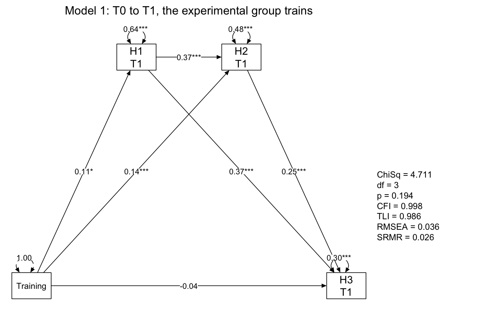
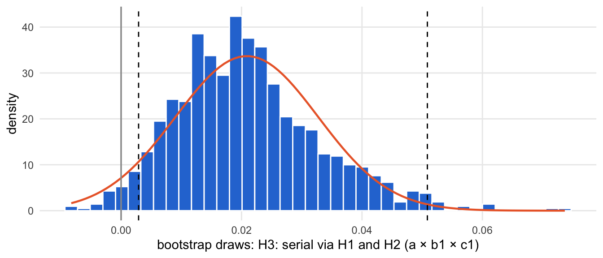
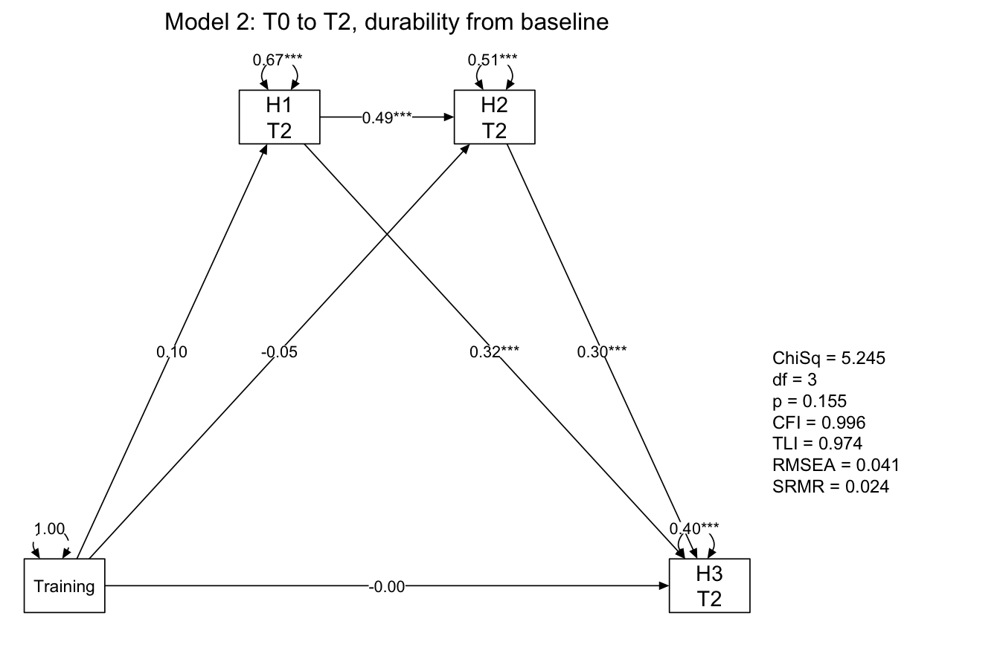
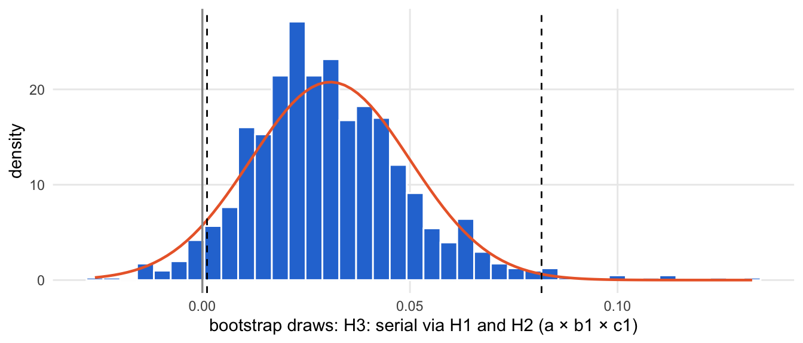
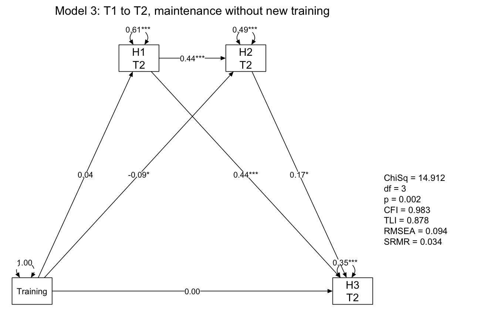
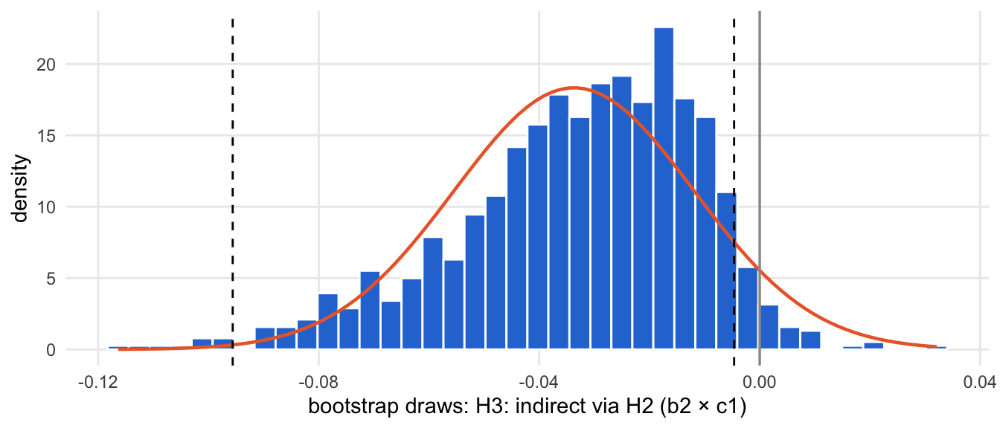
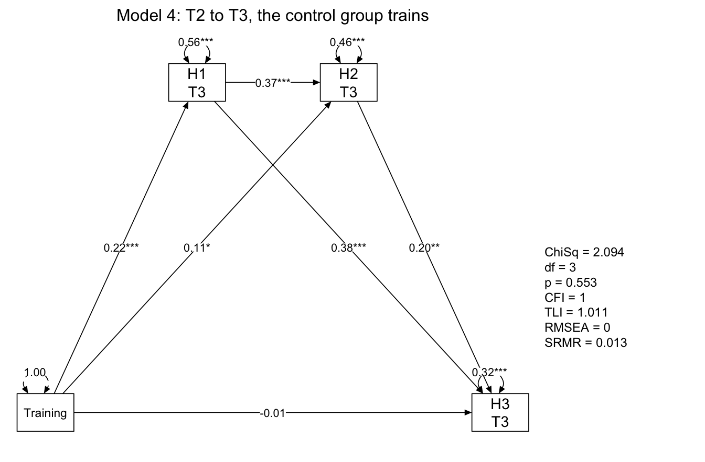
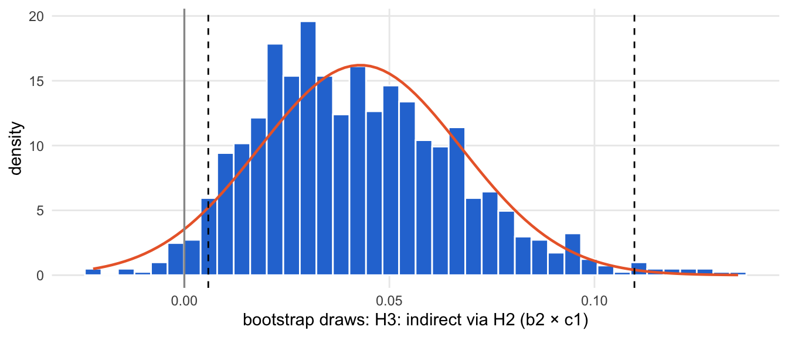
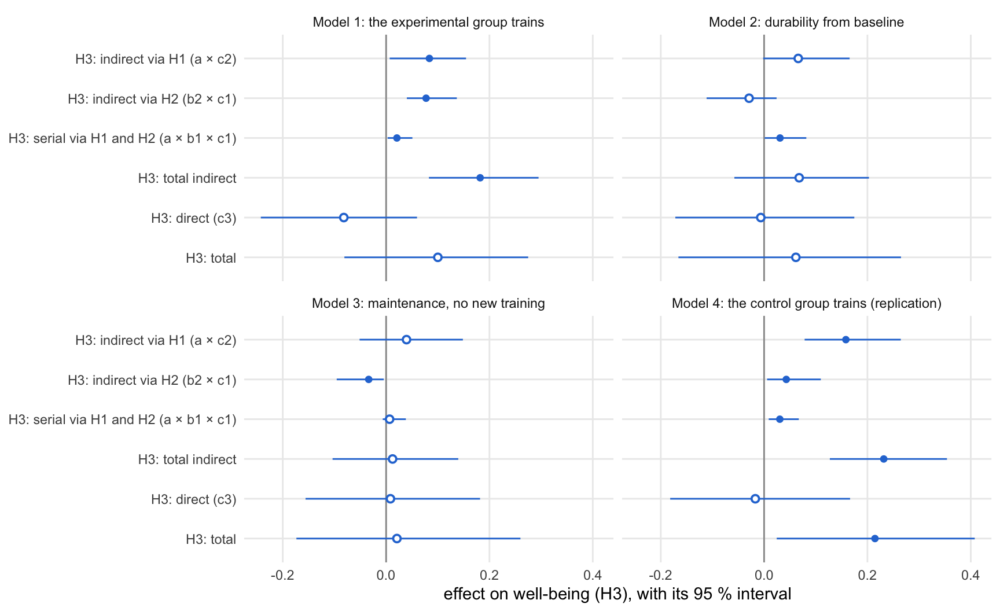

source("R/packages.R") # all packages (Chapter 1)
source("R/settings.R") # waves, conditions, folders (Chapter 1)
df <- readRDS("cache/df.rds") # one row per questionnaire (Chapter 2)
df_wide <- readRDS("cache/df_wide.rds") # one row per person (Chapter 2)
item_names <- names(select(df, ListenOther1:CompetenceNonFrustrated4))
source("R/scales.R") # the 23 scales (Chapter 2)12. Serial mediation
NoteAbout this chapter
Tests the preregistered pathway of the training: training → listening and togetherness (H1) → cognitive complexity (H2) → well-being (H3), in four windows between two waves. Every window goes through the same seven steps: its model, the path diagram, the paths, the indirect effects with bootstrap confidence intervals, the check with complete cases and cluster-robust standard errors, and a model with latent blocks (structural after measurement) that asks whether the effects hold when measurement error is modelled. A section at the end puts the four windows side by side. Feeds the mediation results of the paper (Chapter 20) and the comparison with the post hoc structure (Chapter 19).
12.1 How each window is examined
How does the training reach well-being? In each window, the composite scores at the end of the window are regressed in sequence: H1 on the training, H2 on H1 and the training, H3 on H2, H1 and the training. All three regressions control for the three composites at the start of the window. The indirect effect on H3 splits into three paths: through H1 alone, through H2 alone, and through H1 and H2 in series. Within a wave, H1, H2 and H3 are measured at the same time; their order inside the wave is a theoretical assumption, not a feature of the design.
Which windows? Four: the experimental group trains (Model 1, T0 to T1), durability from baseline (Model 2, T0 to T2), maintenance without new training (Model 3, T1 to T2, which controls for a state already after the training and is read with care), and the replication while the control group trains (Model 4, T2 to T3, with train_cg in place of train_eg).
What happens to each window? The same seven steps, in the same order and in four parts: the model, the effects, their robustness, and what follows. The diagram shows the path; the list below describes each step.
flowchart TB
subgraph MODEL["the model"]
direction LR
S1["<b>Step 1</b><br>the model"] --> S2{{"<b>Step 2</b><br>path diagram:<br>possible? does it fit?"}}
end
subgraph EFFECTS["the effects"]
direction LR
S3["<b>Step 3</b><br>the paths a, b, c"] --> S4["<b>Step 4</b><br>the indirect effects"]
end
subgraph ROBUST["robustness"]
direction LR
S5["<b>Step 5</b><br>complete cases,<br>clustered errors"] --> S6["<b>Step 6</b><br>latent blocks"]
end
V["<b>Step 7</b><br>what follows"]
MODEL --> EFFECTS
EFFECTS --> ROBUST
ROBUST --> V
classDef all fill:#efeff2,stroke:#8a8a8a,color:#1d1d1f
classDef verdict fill:#ffffff,stroke:#1d1d1f,color:#1d1d1f
class S1,S2,S3,S4,S5,S6 all
class V verdict
style MODEL fill:#fafafa,stroke:#8a8a8a
style EFFECTS fill:#fafafa,stroke:#8a8a8a
style ROBUST fill:#fafafa,stroke:#8a8a8a
The seven steps in detail:
The model:
- The model. Its lavaan syntax, written out: the three regressions with the paths a (training → H1), b1 (H1 → H2), b2 (training → H2), c1 (H2 → H3), c2 (H1 → H3) and c3 (training → H3), and the indirect, direct and total effects defined from them. Each model is fitted by maximum likelihood with 1,000 bootstrap draws, once with full information (FIML, all persons) and once with complete cases only.
- The path diagram. The six paths, standardized (FIML), with stars for p < .05, .01 and .001, and the fit of the model. The model keeps three degrees of freedom: it takes the training to be unrelated to the three composites at the start of the window. Where this holds, the model fits closely (χ² test with p above .05, CFI from .95, SRMR below .08). Before the paths are read, the model goes through the textbook checks of a path model, in the order of Chapter 7 (Kline, 2016, ch. 9): the estimation converged, no variance is negative, no correlation lies beyond ±1, every parameter has a standard error, and the fit by χ², CFI, RMSEA (up to .06) and SRMR (Hu & Bentler, 1999).
The effects:
- The paths a, b and c. Their standardized estimates, standard errors and p-values.
- The indirect effects. Indirect, direct and total effects, unstandardized, with bias-corrected bootstrap intervals (95 %) and the p-value of a z-test on the bootstrap standard error. An effect carries when its interval excludes 0. The z-test assumes that an estimate is normally distributed across samples; an indirect effect is a product of paths, and the distribution of a product is skewed. The bootstrap interval, which follows the skew, is therefore the standard test for indirect effects (MacKinnon et al., 2004; Preacher & Hayes, 2008), and it decides here. Where the two tests disagree, the bootstrap draws of the effect show why. An indirect effect that carries while the direct path does not is an indirect-only mediation (Zhao et al., 2010).
Robustness:
- Complete cases and clustered errors. How many persons carry the window, and whether the paths and effects keep their significance with complete cases only (bootstrap) and with standard errors clustered by municipality, where the training was assigned (no bootstrap). The key paths are a, b1 and c1, which make up the serial path.
- Latent blocks. The same model with each block as a latent factor measured by its scale scores, estimated by local structural-after-measurement (SAM; Rosseel & Loh, 2024): how well the scales measure each block (against the CFI of .90 that the block models of Chapter 8 have to meet), which effects carry, and how large they are, standardized, against the composites.
What follows:
- What follows. What the window adds to the pathway, and where its results go.
12.2 Data and tools
Which data? One row per person (df_wide, Chapter 2), with the three composites at each wave and the two training indicators. The models are fitted in two scripts of their own (below); this chapter reads their fits, one row per window:
mediation <- readRDS("cache/mediation_bootstrap.rds") # composites
mediation_sam <- readRDS("cache/mediation_sam.rds") # latent blocks
mediation |>
select(model, pre, post, treated, reading)| model | pre | post | treated | reading |
|---|---|---|---|---|
| 1 | T0 | T1 | train_eg | the experimental group trains |
| 2 | T0 | T2 | train_eg | durability from baseline |
| 3 | T1 | T2 | train_eg | maintenance, no new training |
| 4 | T2 | T3 | train_cg | the control group trains (replication) |
How are the models fitted? The bootstraps take a few minutes for the composites (four windows, full information and complete cases) and about an hour for the latent blocks, so they run in scripts. The functions that write the syntax of a window and fit it, and the two scripts:
# Serial mediation (Chapter 12): training -> listening and togetherness (H1)
# -> cognitive complexity (H2) -> well-being (H3) in one window, controlling
# for the three composites at the start of the window
# the four windows and the group that trains in each
mediation_windows <- tribble(
~model, ~pre, ~post, ~treated, ~reading,
1, "T0", "T1", "train_eg", "the experimental group trains",
2, "T0", "T2", "train_eg", "durability from baseline",
3, "T1", "T2", "train_eg", "maintenance, no new training",
4, "T2", "T3", "train_cg", "the control group trains (replication)"
)
# the wide names of the composites at a wave: T1_Hypothesis2_... and so on
composite_at <- \(wave) {
str_c(wave, "_", c("Hypothesis1_ListeningTogetherness",
"Hypothesis2_CognitiveComplexity",
"Hypothesis3_Wellbeing"))
}
mediation_model <- \(pre, post, treated) {
before <- composite_at(pre)
after <- composite_at(post)
controls <- str_c(before, collapse = " + ")
c(
# paths: a (training -> H1), b1 and b2 (-> H2), c1 to c3 (-> H3)
str_c(after[1], " ~ A*", treated, " + ", controls),
str_c(after[2], " ~ B1*", after[1], " + B2*", treated, " + ", controls),
str_c(after[3], " ~ C1*", after[2], " + C2*", after[1], " + C3*",
treated, " + ", controls),
# the controls covary
str_c(before[1], " ~~ ", before[2]),
str_c(before[1], " ~~ ", before[3]),
str_c(before[2], " ~~ ", before[3]),
# effects on H2
"indirectH2 := A*B1",
"directH2 := B2",
"totalH2 := B2 + A*B1",
# effects on H3: via H1, via H2, via both in series
"ind_LET := A*C2",
"ind_CF := B2*C1",
"ind_serial := A*B1*C1",
"total_indirect := A*C2 + B2*C1 + A*B1*C1",
"directH3 := C3",
"totalH3 := C3 + A*C2 + B2*C1 + A*B1*C1"
) |>
str_c(collapse = "\n")
}
# maximum likelihood with 1,000 bootstrap draws (seed as before); missing
# values by full information ("fiml") or complete cases ("listwise")
fit_mediation <- \(model, data, missing = "fiml") {
set.seed(20260525)
sem(model, data = data, estimator = "ML", se = "bootstrap",
bootstrap = 1000, missing = missing)
}# Serial mediation: the bootstrapped fits of Chapter 12, four windows, full
# information and complete cases, 1,000 draws each (about 6 minutes)
# Run from swt-website/ after Chapter 2: Rscript scripts/mediation_bootstrap.R
source("R/packages.R")
source("R/settings.R")
source("R/mediation_model.R")
df_wide <- readRDS("cache/df_wide.rds") # one row per person (Chapter 2)
mediation <- mediation_windows |>
mutate(syntax = pmap_chr(list(pre, post, treated), mediation_model),
fiml = map(syntax, \(m) fit_mediation(m, df_wide)),
listwise = map(syntax, \(m) fit_mediation(m, df_wide, "listwise")))
saveRDS(mediation, "cache/mediation_bootstrap.rds")# Serial mediation with latent blocks (Chapter 12): each hypothesis block is
# a latent factor measured by its scale scores, estimated by local
# structural-after-measurement (SAM; Rosseel & Loh, 2024). Needs R/scales.R
# and R/mediation_model.R.
# one row per person, in the order of df_wide: the 23 scale scores at each
# wave (ListenOther_T0, ...) and the two training indicators
scale_scores_wide <- \(data, wide) {
scores <- data |>
select(id, Occasion, all_of(scales$scale)) |>
pivot_wider(names_from = Occasion, values_from = all_of(scales$scale),
names_glue = "{.value}_{Occasion}")
wide |>
select(id, train_eg, train_cg) |>
left_join(scores, by = "id")
}
sam_blocks <- list(H1 = h1_scales, H2 = h2_scales, H3 = h3_scales)
# scales of reverse-keyed items only: their residuals share the wording
reverse_keyed <- c("NoAlienation", "NoIsolation", "AutonomyNonFrustrated",
"RelatednessNonFrustrated", "CompetenceNonFrustrated")
# one block at the two waves of a window: the first scale is the marker,
# the loadings are equal over the two waves, each scale's residual covaries
# with itself over the waves and with the other reverse-keyed scales
measurement_block <- \(block, waves) {
s <- sam_blocks[[block]]
labels <- c("1*", str_c(str_to_lower(block), "_", seq_along(s)[-1], "*"))
keyed <- intersect(s, reverse_keyed)
wording <- if (length(keyed) < 2) character() else
map(waves, \(w) combn(keyed, 2, \(p)
str_c(p[1], "_", w, " ~~ ", p[2], "_", w))) |> unlist()
c(map_chr(waves, \(w) str_c(block, "_", w, " =~ ",
str_c(labels, s, "_", w, collapse = " + "))),
str_c(s, "_", waves[1], " ~~ ", s, "_", waves[2]),
wording)
}
# the measurement blocks and the structural model of 12.1, with the
# composites replaced by the latent blocks (T1_Hypothesis2_... -> H2_T1)
sam_mediation_model <- \(pre, post, treated) {
structural <- mediation_model(pre, post, treated) |>
str_replace_all("(T[0-3])_Hypothesis([1-3])_[A-Za-z]+", "H\\2_\\1")
c(map(names(sam_blocks), \(b) measurement_block(b, c(pre, post))) |>
unlist(),
structural) |>
str_c(collapse = "\n")
}
# the measurement blocks of a window: each block at both waves together
sam_mm_list <- \(pre, post) {
map(names(sam_blocks), \(b) str_c(b, "_", c(pre, post))) |>
set_names(names(sam_blocks))
}
# local SAM, missing values by full information (with enough EM steps for
# the saturated moments, as in Chapter 8), 1,000 bootstrap draws (seed as
# in Chapter 12)
fit_sam_mediation <- \(model, data, pre, post) {
set.seed(20260525)
sam(model, data = data, mm.list = sam_mm_list(pre, post),
missing = "fiml", em.h1.iter.max = 20000, se = "bootstrap",
bootstrap.args = list(R = 1000L))
}
# the fit of each measurement block, the first step of SAM on its own
measurement_fit <- \(model, data, pre, post) {
steps <- sam(model, data = data, mm.list = sam_mm_list(pre, post),
missing = "fiml", em.h1.iter.max = 20000, se = "none",
output = "list")
steps$MM.FIT |>
set_names(names(sam_blocks)) |>
map(\(f) fitMeasures(f, c("chisq", "df", "cfi", "rmsea", "srmr")) |>
as.list() |>
as_tibble()) |>
list_rbind(names_to = "block")
}
# quantiles of bootstrap draws, interpolated on the normal scale between
# neighbouring order statistics (as lavaan's percentile intervals)
draw_quantile <- \(draws, probs) {
t <- sort(draws[is.finite(draws)])
n <- length(t)
map_dbl(probs, \(p) {
k <- trunc((n + 1) * p)
if (k < 1) return(t[1])
if (k >= n) return(t[n])
z <- qnorm(c(p, k / (n + 1), (k + 1) / (n + 1)))
t[k] + (z[1] - z[2]) / (z[3] - z[2]) * (t[k + 1] - t[k])
})
}
# the bias-corrected percentile interval of bootstrap draws, computed as
# lavaan's boot.ci.type = "bca.simple"
bc_interval <- \(draws, estimate, level = .95) {
z0 <- qnorm(mean(draws < estimate))
draw_quantile(draws, pnorm(2 * z0 + qnorm((1 + c(-level, level)) / 2)))
}
# the defined effects of a SAM fit: each effect's formula (A*B1*C1, ...) on
# the estimates and on every bootstrap draw
sam_effects <- \(fit) {
draws <- as.data.frame(lavInspect(fit, "boot"))
parameterEstimates(fit, se = FALSE, zstat = FALSE, pvalue = FALSE,
ci = FALSE) |>
filter(op == ":=") |>
mutate(ci = map2(rhs, est, \(f, e)
bc_interval(eval(str2lang(f), draws), e))) |>
transmute(effect = label, est, ci_low = map_dbl(ci, 1),
ci_high = map_dbl(ci, 2))
}# Serial mediation with latent blocks (Chapter 12): local SAM in the four
# windows, 1,000 bootstrap draws each (about an hour)
# Run from swt-website/ after Chapter 2: Rscript scripts/mediation_sam.R
source("R/packages.R")
source("R/settings.R")
df <- readRDS("cache/df.rds") # one row per questionnaire
df_wide <- readRDS("cache/df_wide.rds") # one row per person
item_names <- names(select(df, ListenOther1:CompetenceNonFrustrated4))
source("R/scales.R")
source("R/mediation_model.R")
source("R/mediation_sam.R")
scores <- scale_scores_wide(df, df_wide)
mediation_sam <- mediation_windows |>
mutate(syntax = pmap_chr(list(pre, post, treated), sam_mediation_model),
fit = pmap(list(syntax, pre, post), \(m, a, b)
fit_sam_mediation(m, scores, a, b)))
saveRDS(mediation_sam, "cache/mediation_sam.rds")The FIML fits include all 451 persons; those without any answer in a window carry no information on it and leave the estimates unchanged.
Which tools? The analysis of each step is written out for every window. Only the checks of Step 2, the labels, the figures and the table of the three estimators use small functions, defined once here:
# ✓ or ✗
mark <- \(x) if_else(x, "✓", "✗")
# the textbook checks of a path model (Kline, 2016, ch. 9), in the order of
# Chapter 7: did the estimation converge, is the solution proper, and how
# well does the model fit (χ² test with p above .05, CFI from .95, RMSEA up
# to .06 and SRMR below .08; Hu & Bentler, 1999)
path_checks <- \(fit) {
variances <- parameterEstimates(fit) |> filter(op == "~~", lhs == rhs)
correlations <- standardizedSolution(fit, se = FALSE, zstat = FALSE,
pvalue = FALSE, ci = FALSE) |>
filter(op == "~~", lhs != rhs)
se <- parTable(fit) |> filter(free > 0) |> pull(se)
fm <- fitMeasures(fit, c("chisq", "df", "pvalue", "cfi", "rmsea",
"srmr"))
tribble(
~check, ~value, ~criterion, ~holds,
"1 estimation: converged",
if (lavInspect(fit, "converged")) "yes" else "no", "yes",
lavInspect(fit, "converged"),
"2 variances: smallest variance", apa(min(variances$est), 3),
"above 0", min(variances$est) > 0,
"3 correlations: largest", apa(max(abs(correlations$est.std)), 2),
"within ±1", max(abs(correlations$est.std)) <= 1,
"4 standard errors", if (all(is.finite(se) & se > 0)) "yes" else "no",
"yes", all(is.finite(se) & se > 0),
"5 fit: χ² test",
str_c("χ²(", fm[["df"]], ") = ", sprintf("%.2f", fm[["chisq"]]),
", p = ", apa(fm[["pvalue"]], 3)),
"p above .05", fm[["pvalue"]] > .05,
"6 fit: CFI", apa(fm[["cfi"]], 3), "at least .95", fm[["cfi"]] >= .95,
"7 fit: RMSEA", apa(fm[["rmsea"]], 3), "at most .06",
fm[["rmsea"]] <= .06,
"8 fit: SRMR", apa(fm[["srmr"]], 3), "below .08", fm[["srmr"]] < .08
) |>
mutate(holds = mark(holds))
}
# what the checks say, in one sentence
path_sentence <- \(checks) {
proper <- all(checks$holds[1:4] == "✓")
misfit <- checks |> slice(5:8) |> filter(holds == "✗")
str_c(if (proper) {
"The estimation converges and the solution is proper"
} else "The solution is not proper",
if (nrow(misfit) == 0) {
", and the model fits closely by all four indices."
} else {
str_c(", but it misses ",
str_flatten_comma(str_c("the ", str_remove(misfit$check,
"^[0-9] fit: ")),
last = " and "),
": the model's assumption that the training is unrelated ",
"to the composites at the start of the window does not ",
"hold here, and the window is read with care.")
})
}# the names of the effects and paths in the tables
effect_labels <- c(
indirectH2 = "H2: indirect via H1 (a × b1)",
directH2 = "H2: direct (b2)",
totalH2 = "H2: total",
ind_LET = "H3: indirect via H1 (a × c2)",
ind_CF = "H3: indirect via H2 (b2 × c1)",
ind_serial = "H3: serial via H1 and H2 (a × b1 × c1)",
total_indirect = "H3: total indirect",
directH3 = "H3: direct (c3)",
totalH3 = "H3: total"
)
path_labels <- c(A = "a: training -> H1", B1 = "b1: H1 -> H2",
B2 = "b2: training -> H2", C1 = "c1: H2 -> H3",
C2 = "c2: H1 -> H3", C3 = "c3: training -> H3",
effect_labels)# the fit beside the diagram, and its title above
fit_text <- \(fit, title = "") {
values <- fitMeasures(fit, c("chisq", "df", "pvalue", "cfi", "tli",
"rmsea", "srmr"))
labels <- c("ChiSq", "df", "p", "CFI", "TLI", "RMSEA", "SRMR")
text(1.15, -.4, labels = str_c(labels, " = ", round(values, 3),
collapse = "\n"),
pos = 4, cex = .75)
text(0, 1.4, labels = title, cex = 1)
}
# the six paths of a window as a path diagram: the training, and H1, H2
# and H3 at the end of the window (the composites at its start, which all
# regressions control for, are left out); standardized estimates, stars
# for their significance
mediationPlot <- \(fit, title) {
ends <- lavNames(fit, "eqs.y") # H1, H2 and H3 at the end
training <- lavNames(fit, "ov.x") # train_eg or train_cg
starts <- setdiff(lavNames(fit, "ov"), c(ends, training))
semPlotModel(fit) |>
drop_nodes(starts) |>
semPaths(whatLabels = "std", style = "mx",
layout = matrix(c(NA, ends[1], ends[2], NA,
training, NA, NA, ends[3]),
nrow = 2, byrow = TRUE),
nCharNodes = 0, edge.color = "black", intercepts = FALSE,
asize = 2.5, sizeMan = 9, sizeMan2 = 6, edge.label.cex = .8,
mar = c(3, 2, 5, 9), DoNotPlot = TRUE) |>
mark_sig(fit, std_type = TRUE) |>
change_node_label(set_names(c(str_c(c("H1", "H2", "H3"), "\n",
str_sub(ends, 1, 2)),
"Training"),
c(ends, training)),
label.cex = 1) |>
plot()
fit_text(fit, title)
}# the bootstrap draws of one effect (bars), the normal curve the z-test
# assumes (centred on the estimate, with the bootstrap standard error),
# the bias-corrected interval (dashed) and 0 (grey)
plot_draws <- \(draws, effect) {
tibble(draw = as.numeric(draws)) |>
ggplot(aes(draw)) +
geom_histogram(aes(y = after_stat(density)), bins = 40,
fill = "#2a78d6", colour = "white") +
stat_function(fun = dnorm,
args = list(mean = effect$est, sd = sd(draws)),
colour = "#eb6834", linewidth = .8) +
geom_vline(xintercept = c(effect$ci_low, effect$ci_high),
linetype = "dashed") +
geom_vline(xintercept = 0, colour = "grey60", linewidth = .6) +
labs(x = str_c("bootstrap draws: ", effect_labels[effect$effect]),
y = "density") +
theme_minimal(base_size = 11) +
theme(panel.grid.minor = element_blank())
}# the standardized paths and effects of a fit, with their p-values
standardized <- \(fit) {
standardizedSolution(fit) |>
filter(label %in% names(path_labels)) |>
distinct(label, .keep_all = TRUE) |>
transmute(label, beta = est.std, p = pvalue)
}# the effects on well-being (H3) in each window, with their bias-corrected
# intervals; filled where the interval excludes 0
plot_effects <- \(effects) {
effects |>
filter(str_starts(as.character(effect), "H3")) |>
mutate(effect = fct_rev(fct_drop(effect)),
window = str_c("Model ", model, ": ", reading),
excludes_0 = ci_low > 0 | ci_high < 0) |>
ggplot(aes(est, effect)) +
geom_vline(xintercept = 0, colour = "grey60") +
geom_pointrange(aes(xmin = ci_low, xmax = ci_high, shape = excludes_0),
colour = "#2a78d6", fill = "white", size = .4) +
scale_shape_manual(values = c(`TRUE` = 16, `FALSE` = 21),
guide = "none") +
facet_wrap(~ window, ncol = 2) +
labs(x = "effect on well-being (H3), with its 95 % interval", y = NULL) +
theme_minimal(base_size = 11) +
theme(panel.grid.minor = element_blank())
}12.3 The first training (experimental group)
Model 1: the experimental group trains (T0 to T1)
Its path through the steps. One row per decision below; every step uses all persons all persons:
| Step | Question | Result | Next |
|---|---|---|---|
| 2 | Possible, and does it fit? | yes; it fits closely | the paths |
| 3 | Which paths carry? | a, b1, b2, c1 and c2; not c3 | indirect effects |
| 4 | Which effects carry (bootstrap)? | all three indirect paths (through H1, through H2, serial) and the total indirect effect; not the direct or the total effect | robustness |
| 5 | With complete cases and clustered errors? | a, b1 and c1 keep their significance in both | latent blocks |
| 6 | With latent blocks? | the serial path, the total indirect and the total effect; not the paths through H1 or H2 alone | what follows |
| 7 | Where next? | Chapters 19 and 20 |
The model · Steps 1 and 2
Step 1 · The model all persons
What is regressed on what? The experimental group trains between January (T0) and March (T1); train_eg marks the persons of its ten municipalities. The composites at T1 are regressed on the training and on each other, controlling for the composites at T0:
m1_model <- "
# a: the training -> H1
T1_Hypothesis1_ListeningTogetherness ~ A*train_eg +
T0_Hypothesis1_ListeningTogetherness + T0_Hypothesis2_CognitiveComplexity +
T0_Hypothesis3_Wellbeing
# b1: H1 -> H2, b2: the training -> H2
T1_Hypothesis2_CognitiveComplexity ~ B1*T1_Hypothesis1_ListeningTogetherness +
B2*train_eg +
T0_Hypothesis1_ListeningTogetherness + T0_Hypothesis2_CognitiveComplexity +
T0_Hypothesis3_Wellbeing
# c1: H2 -> H3, c2: H1 -> H3, c3: the training -> H3
T1_Hypothesis3_Wellbeing ~ C1*T1_Hypothesis2_CognitiveComplexity +
C2*T1_Hypothesis1_ListeningTogetherness + C3*train_eg +
T0_Hypothesis1_ListeningTogetherness + T0_Hypothesis2_CognitiveComplexity +
T0_Hypothesis3_Wellbeing
# the composites at T0 covary
T0_Hypothesis1_ListeningTogetherness ~~ T0_Hypothesis2_CognitiveComplexity
T0_Hypothesis1_ListeningTogetherness ~~ T0_Hypothesis3_Wellbeing
T0_Hypothesis2_CognitiveComplexity ~~ T0_Hypothesis3_Wellbeing
# the effects on H2
indirectH2 := A*B1
directH2 := B2
totalH2 := B2 + A*B1
# the effects on H3: via H1, via H2, via both in series
ind_LET := A*C2
ind_CF := B2*C1
ind_serial := A*B1*C1
total_indirect := A*C2 + B2*C1 + A*B1*C1
directH3 := C3
totalH3 := C3 + A*C2 + B2*C1 + A*B1*C1
"Which fits? The script fitted this model with 1,000 bootstrap draws, once with all persons (FIML) and once with complete cases:
m1_fit <- mediation$fiml[[1]]
m1_listwise <- mediation$listwise[[1]]Next → Step 2, the path diagram: What does the model look like?
Step 2 · The path diagram all persons
What does the model look like?
m1_fit |>
mediationPlot("Model 1: T0 to T1, the experimental group trains")
The diagram leaves out the composites at T0, which all three regressions control for. The model fits closely (χ²(3) = 4.71, p = .194, CFI = .998, SRMR = .026). Its three degrees of freedom are the relations of the training with the three composites at T0, which the model sets to zero: in January nobody had trained yet, and the training correlates with none of them beyond |r| = .10.
Does the model pass the textbook checks? Convergence, a proper solution and the fit, in the order of Chapter 7:
m1_checks <- path_checks(m1_fit)
m1_checks| check | value | criterion | holds |
|---|---|---|---|
| 1 estimation: converged | yes | yes | ✓ |
| 2 variances: smallest variance | .247 | above 0 | ✓ |
| 3 correlations: largest | .54 | within ±1 | ✓ |
| 4 standard errors | yes | yes | ✓ |
| 5 fit: χ² test | χ²(3) = 4.71, p = .194 | p above .05 | ✓ |
| 6 fit: CFI | .998 | at least .95 | ✓ |
| 7 fit: RMSEA | .036 | at most .06 | ✓ |
| 8 fit: SRMR | .026 | below .08 | ✓ |
The estimation converges and the solution is proper, and the model fits closely by all four indices.
Next → Step 3, the paths a, b and c: Which paths carry?
The effects · Steps 3 and 4
Step 3 · The paths a, b and c all persons
Which paths carry?
standardizedSolution(m1_fit) |>
filter(label %in% c("A", "B1", "B2", "C1", "C2", "C3")) |>
transmute(path = path_labels[label], beta = est.std, se, p = pvalue) |>
mutate(across(where(is.double), \(x) round(x, 3)))| path | beta | se | p |
|---|---|---|---|
| a: training -> H1 | 0.105 | 0.049 | 0.033 |
| b1: H1 -> H2 | 0.365 | 0.054 | 0.000 |
| b2: training -> H2 | 0.142 | 0.038 | 0.000 |
| c1: H2 -> H3 | 0.250 | 0.056 | 0.000 |
| c2: H1 -> H3 | 0.366 | 0.067 | 0.000 |
| c3: training -> H3 | -0.038 | 0.036 | 0.291 |
All paths but one carry. The training moves listening and togetherness (a = .11, p = .033) and cognitive complexity directly (b2 = .14); H1 goes with H2 (b1 = .37), and both go with well-being (c1 = .25, c2 = .37). The direct path from the training to well-being is small, negative and not significant (c3 = -.04, p = .291).
Next → Step 4, the indirect effects: Which effects carry?
Step 4 · The indirect effects all persons
Which effects carry? Indirect, direct and total effects, unstandardized, with bias-corrected bootstrap intervals and the p-value of the z-test:
m1_effects <- parameterEstimates(m1_fit, boot.ci.type = "bca.simple") |>
filter(op == ":=") |>
transmute(effect = label, est, ci_low = ci.lower, ci_high = ci.upper,
p = pvalue)
m1_effects |>
mutate(effect = effect_labels[effect],
across(where(is.double), \(x) round(x, 3)))| effect | est | ci_low | ci_high | p |
|---|---|---|---|---|
| H2: indirect via H1 (a × b1) | 0.066 | 0.005 | 0.133 | 0.044 |
| H2: direct (b2) | 0.244 | 0.120 | 0.378 | 0.000 |
| H2: total | 0.310 | 0.162 | 0.459 | 0.000 |
| H3: indirect via H1 (a × c2) | 0.084 | 0.007 | 0.155 | 0.024 |
| H3: indirect via H2 (b2 × c1) | 0.077 | 0.040 | 0.137 | 0.001 |
| H3: serial via H1 and H2 (a × b1 × c1) | 0.021 | 0.003 | 0.051 | 0.078 |
| H3: total indirect | 0.182 | 0.083 | 0.295 | 0.001 |
| H3: direct (c3) | -0.082 | -0.243 | 0.060 | 0.290 |
| H3: total | 0.100 | -0.081 | 0.275 | 0.273 |
Which test decides? The effects on which the interval and the z-test disagree:
m1_effects |>
filter((ci_low > 0 | ci_high < 0) != (p < .05)) |>
mutate(effect = effect_labels[effect],
across(where(is.double), \(x) round(x, 3)))| effect | est | ci_low | ci_high | p |
|---|---|---|---|---|
| H3: serial via H1 and H2 (a × b1 × c1) | 0.021 | 0.003 | 0.051 | 0.078 |
Only the serial path. Its 1,000 bootstrap draws:
m1_serial <- m1_effects |>
filter(effect == "ind_serial")
m1_serial_draws <- lavInspect(m1_fit, "boot") |>
as_tibble() |>
transmute(serial = A * B1 * C1)
m1_serial_draws |>
summarise(draws = n(), at_or_below_0 = mean(serial <= 0),
below_estimate = mean(serial < m1_serial$est),
skewness = psych::skew(serial)) |>
mutate(across(where(is.double), \(x) round(x, 3)))| draws | at_or_below_0 | below_estimate | skewness |
|---|---|---|---|
| 1000 | 0.02 | 0.546 | 0.639 |
The draws as bars, the normal curve that the z-test assumes, and the bias-corrected interval as dashed lines:
plot_draws(m1_serial_draws$serial, m1_serial)
The serial path does not reach p < .05 in the z-test (p = .078). Its bootstrap draws are skewed to the right (skewness 0.64), and only 2.0 % of them lie at or below 0. The interval follows this shape, the normal curve of the z-test does not. By the interval, the serial path is significant in Model 1.
What kind of mediation is it? While the experimental group trains, the total indirect effect on well-being is 0.18 [0.08, 0.30], and the serial path through H1 and H2 is 0.021 [0.003, 0.051]. The direct path is small, negative and not significant (-0.08), and so is the total effect of the training on well-being (0.10 [-0.08, 0.27], p = .273). This is an indirect-only mediation (Zhao et al., 2010): the path from the training through listening and togetherness and cognitive complexity to well-being carries, but in this window the training does not change well-being significantly in total. The results therefore show an indirect effect, not an effect on well-being that runs entirely through the mediators.
Next → Step 5, complete cases and clustered errors: How many persons carry the window?
Robustness · Steps 5 and 6
Step 5 · Complete cases and clustered errors all persons
How many persons carry the window? All persons enter the FIML fit; those with at least one of the six composites of the window inform it, and those with all six carry the complete-case fit:
m1_composites <- c(composite_at("T0"), composite_at("T1"))
m1_persons <- tibble(
model = 1, pre = "T0", post = "T1",
fiml = lavInspect(m1_fit, "nobs"),
answering = df_wide |>
filter(if_any(all_of(m1_composites), \(x) !is.na(x))) |>
nrow(),
complete = lavInspect(m1_listwise, "nobs")
)
m1_persons| model | pre | post | fiml | answering | complete |
|---|---|---|---|---|---|
| 1 | T0 | T1 | 451 | 378 | 282 |
Of the 451 persons, 378 answered at T0 or T1, and 282 have all six composites.
The third estimator clusters the standard errors by municipality, where the training was assigned. It cannot be combined with the bootstrap and is fast, so it runs here:
m1_cluster <- sem(m1_model, data = df_wide, estimator = "ML",
se = "robust.huber.white", cluster = "Municipality",
missing = "fiml", fixed.x = FALSE)Do the results depend on the estimator? Standardized paths and effects with their p-values, for FIML (bootstrap), cluster-robust standard errors and complete cases (bootstrap):
m1_estimators <- list(fiml = m1_fit, cluster = m1_cluster,
listwise = m1_listwise) |>
map(standardized) |>
list_rbind(names_to = "estimator")
m1_estimators |>
mutate(path = path_labels[label], across(c(beta, p), \(x) round(x, 3))) |>
pivot_wider(id_cols = path, names_from = estimator,
values_from = c(beta, p), names_glue = "{estimator}_{.value}")| path | fiml_beta | cluster_beta | listwise_beta | fiml_p | cluster_p | listwise_p |
|---|---|---|---|---|---|---|
| a: training -> H1 | 0.105 | 0.105 | 0.106 | 0.033 | 0.033 | 0.030 |
| b1: H1 -> H2 | 0.365 | 0.365 | 0.370 | 0.000 | 0.000 | 0.000 |
| b2: training -> H2 | 0.142 | 0.142 | 0.140 | 0.000 | 0.001 | 0.001 |
| c1: H2 -> H3 | 0.250 | 0.250 | 0.250 | 0.000 | 0.000 | 0.000 |
| c2: H1 -> H3 | 0.366 | 0.366 | 0.381 | 0.000 | 0.000 | 0.000 |
| c3: training -> H3 | -0.038 | -0.038 | -0.031 | 0.291 | 0.180 | 0.397 |
| H2: indirect via H1 (a × b1) | 0.038 | 0.038 | 0.039 | 0.039 | 0.037 | 0.039 |
| H2: direct (b2) | 0.142 | 0.142 | 0.140 | 0.000 | 0.001 | 0.001 |
| H2: total | 0.181 | 0.181 | 0.179 | 0.000 | 0.001 | 0.000 |
| H3: indirect via H1 (a × c2) | 0.038 | 0.038 | 0.040 | 0.023 | 0.014 | 0.020 |
| H3: indirect via H2 (b2 × c1) | 0.036 | 0.036 | 0.035 | 0.001 | 0.004 | 0.001 |
| H3: serial via H1 and H2 (a × b1 × c1) | 0.010 | 0.010 | 0.010 | 0.069 | 0.051 | 0.068 |
| H3: total indirect | 0.084 | 0.084 | 0.085 | 0.001 | 0.000 | 0.001 |
| H3: direct (c3) | -0.038 | -0.038 | -0.031 | 0.291 | 0.180 | 0.397 |
| H3: total | 0.046 | 0.046 | 0.055 | 0.276 | 0.272 | 0.195 |
The point estimates of FIML and the cluster-robust fit are identical; only their standard errors differ. Complete cases rest on fewer persons. Every path keeps its significance across the three estimators, the key paths a, b1 and c1 included.
Could the municipalities get a model of their own? A multigroup model, one group per municipality, would let the paths differ between municipalities, and a multigroup SAM (Step 6) would add the control of measurement error. Its groups would be small:
municipality_groups <- df_wide |>
count(Municipality, name = "persons") |>
summarise(municipalities = n(), smallest = min(persons),
largest = max(persons),
parameters_per_group = lavInspect(m1_fit, "npar"),
parameters_in_all = municipalities * parameters_per_group)
municipality_groups| municipalities | smallest | largest | parameters_per_group | parameters_in_all |
|---|---|---|---|---|
| 20 | 12 | 45 | 30 | 600 |
The 20 municipalities hold 12 to 45 persons each, and only some of them answered in a given window. Model 1 alone has 30 free parameters; one model per municipality would need 600 for 451 persons, before any measurement model is added. Such a model is not estimable, so the municipalities enter through the cluster-robust standard errors; how much of the variance lies between them shows the multilevel model (Chapter 10).
Next → Step 6, latent blocks: Does the result hold if measurement error is modelled?
Step 6 · Latent blocks all persons
Does the result hold if measurement error is modelled? The composites treat each block as if it were measured without error. A structural-after-measurement model (SAM; Rosseel & Loh, 2024) first estimates how the scales measure each block and then the paths between the latent blocks; in its local form, misfit in one measurement model does not spread to the other blocks, as it would in a joint model. Each block is a latent factor measured by its scale scores, eight for H1, five for H2 and ten for H3, at both waves of the window. Scale scores rather than items keep the measurement models small (46 indicators instead of 200) and stay close to the composites, which average the same items. Within a block, each loading is equal at the two waves (over two adjacent waves, equal loadings cost the blocks almost no fit; Chapter 8), each scale’s residual covaries with itself over the waves, and the residuals of the scales made only of reverse-keyed items covary within a wave, for their shared wording (No Alienation and No Isolation in H1, the three non-frustration scales in H3; Chapter 5). The structural part is the model of Step 1, with its labels and effects.
Which data? The 23 scale scores at each wave, one row per person, in the order of df_wide:
scale_scores <- scale_scores_wide(df, df_wide)The model in full, as R/mediation_sam.R writes it for this window:
m1_sam_model <- sam_mediation_model("T0", "T1", "train_eg")
cat(m1_sam_model, "\n")H1_T0 =~ 1*ListenOther_T0 + h1_2*ListenSelf_T0 + h1_3*Understood_T0 + h1_4*KamaMuta_T0 + h1_5*Resonance_T0 + h1_6*Belongingness_T0 + h1_7*NoAlienation_T0 + h1_8*NoIsolation_T0
H1_T1 =~ 1*ListenOther_T1 + h1_2*ListenSelf_T1 + h1_3*Understood_T1 + h1_4*KamaMuta_T1 + h1_5*Resonance_T1 + h1_6*Belongingness_T1 + h1_7*NoAlienation_T1 + h1_8*NoIsolation_T1
ListenOther_T0 ~~ ListenOther_T1
ListenSelf_T0 ~~ ListenSelf_T1
Understood_T0 ~~ Understood_T1
KamaMuta_T0 ~~ KamaMuta_T1
Resonance_T0 ~~ Resonance_T1
Belongingness_T0 ~~ Belongingness_T1
NoAlienation_T0 ~~ NoAlienation_T1
NoIsolation_T0 ~~ NoIsolation_T1
NoAlienation_T0 ~~ NoIsolation_T0
NoAlienation_T1 ~~ NoIsolation_T1
H2_T0 =~ 1*Rogerian_T0 + h2_2*ParadoxMindset_T0 + h2_3*IntellectualHumility_T0 + h2_4*ToleranceDiversity_T0 + h2_5*womenAttitude_T0
H2_T1 =~ 1*Rogerian_T1 + h2_2*ParadoxMindset_T1 + h2_3*IntellectualHumility_T1 + h2_4*ToleranceDiversity_T1 + h2_5*womenAttitude_T1
Rogerian_T0 ~~ Rogerian_T1
ParadoxMindset_T0 ~~ ParadoxMindset_T1
IntellectualHumility_T0 ~~ IntellectualHumility_T1
ToleranceDiversity_T0 ~~ ToleranceDiversity_T1
womenAttitude_T0 ~~ womenAttitude_T1
H3_T0 =~ 1*Flourishing_T0 + h3_2*AutonomySatisfaction_T0 + h3_3*RelatednessSatisfaction_T0 + h3_4*CompetenceSatisfaction_T0 + h3_5*AutonomyNonFrustrated_T0 + h3_6*RelatednessNonFrustrated_T0 + h3_7*CompetenceNonFrustrated_T0 + h3_8*Empowerment_T0 + h3_9*Agency_T0 + h3_10*IntellectualCapital_T0
H3_T1 =~ 1*Flourishing_T1 + h3_2*AutonomySatisfaction_T1 + h3_3*RelatednessSatisfaction_T1 + h3_4*CompetenceSatisfaction_T1 + h3_5*AutonomyNonFrustrated_T1 + h3_6*RelatednessNonFrustrated_T1 + h3_7*CompetenceNonFrustrated_T1 + h3_8*Empowerment_T1 + h3_9*Agency_T1 + h3_10*IntellectualCapital_T1
Flourishing_T0 ~~ Flourishing_T1
AutonomySatisfaction_T0 ~~ AutonomySatisfaction_T1
RelatednessSatisfaction_T0 ~~ RelatednessSatisfaction_T1
CompetenceSatisfaction_T0 ~~ CompetenceSatisfaction_T1
AutonomyNonFrustrated_T0 ~~ AutonomyNonFrustrated_T1
RelatednessNonFrustrated_T0 ~~ RelatednessNonFrustrated_T1
CompetenceNonFrustrated_T0 ~~ CompetenceNonFrustrated_T1
Empowerment_T0 ~~ Empowerment_T1
Agency_T0 ~~ Agency_T1
IntellectualCapital_T0 ~~ IntellectualCapital_T1
AutonomyNonFrustrated_T0 ~~ RelatednessNonFrustrated_T0
AutonomyNonFrustrated_T0 ~~ CompetenceNonFrustrated_T0
RelatednessNonFrustrated_T0 ~~ CompetenceNonFrustrated_T0
AutonomyNonFrustrated_T1 ~~ RelatednessNonFrustrated_T1
AutonomyNonFrustrated_T1 ~~ CompetenceNonFrustrated_T1
RelatednessNonFrustrated_T1 ~~ CompetenceNonFrustrated_T1
H1_T1 ~ A*train_eg + H1_T0 + H2_T0 + H3_T0
H2_T1 ~ B1*H1_T1 + B2*train_eg + H1_T0 + H2_T0 + H3_T0
H3_T1 ~ C1*H2_T1 + C2*H1_T1 + C3*train_eg + H1_T0 + H2_T0 + H3_T0
H1_T0 ~~ H2_T0
H1_T0 ~~ H3_T0
H2_T0 ~~ H3_T0
indirectH2 := A*B1
directH2 := B2
totalH2 := B2 + A*B1
ind_LET := A*C2
ind_CF := B2*C1
ind_serial := A*B1*C1
total_indirect := A*C2 + B2*C1 + A*B1*C1
directH3 := C3
totalH3 := C3 + A*C2 + B2*C1 + A*B1*C1 The script fitted it with 1,000 bootstrap draws:
m1_sam <- mediation_sam$fit[[1]]How well do the scales measure the blocks? Each measurement block, fitted on its own as in the first step of SAM:
m1_measurement <- measurement_fit(m1_sam_model, scale_scores, "T0", "T1")
m1_measurement |>
mutate(across(where(is.double), \(x) round(x, 3)))| block | chisq | df | cfi | rmsea | srmr |
|---|---|---|---|---|---|
| H1 | 296.582 | 100 | 0.900 | 0.072 | 0.073 |
| H2 | 46.461 | 33 | 0.978 | 0.033 | 0.041 |
| H3 | 560.972 | 162 | 0.887 | 0.081 | 0.098 |
Its five scales measure H2 well (CFI = .978), the eight scales of H1 about at the threshold of .90 (.900), and the ten scales of H3 least well (CFI = .887, SRMR = .098): flourishing, need satisfaction and non-frustration, empowerment, agency and intellectual capital are a broad base for one factor. In local SAM this misfit stays in the measurement step instead of spreading through a joint model, but the latent covariances of H3 still rest on it.
Which effects carry with latent blocks? The effects of Step 4, in the units of each block’s first scale, with bias-corrected bootstrap intervals (computed from the draws as lavaan computes them for the composites):
m1_sam_effects <- sam_effects(m1_sam)
m1_sam_effects |>
mutate(effect = effect_labels[effect],
across(where(is.double), \(x) round(x, 3)))| effect | est | ci_low | ci_high |
|---|---|---|---|
| H2: indirect via H1 (a × b1) | 0.143 | 0.051 | 0.316 |
| H2: direct (b2) | 0.102 | -0.035 | 0.272 |
| H2: total | 0.245 | 0.081 | 0.433 |
| H3: indirect via H1 (a × c2) | -0.032 | -0.682 | 0.125 |
| H3: indirect via H2 (b2 × c1) | 0.150 | -0.015 | 0.902 |
| H3: serial via H1 and H2 (a × b1 × c1) | 0.209 | 0.053 | 1.021 |
| H3: total indirect | 0.327 | 0.144 | 1.073 |
| H3: direct (c3) | -0.081 | -0.768 | 0.136 |
| H3: total | 0.246 | 0.084 | 0.436 |
How do they compare with the composites? The standardized effects on well-being of both models, and whether their intervals exclude 0:
m1_sam_beta <- standardizedSolution(m1_sam, se = FALSE, zstat = FALSE,
pvalue = FALSE, ci = FALSE) |>
filter(op == ":=") |>
transmute(effect = label, beta_sam = est.std)
m1_comparison <- m1_estimators |>
filter(estimator == "fiml", label %in% names(effect_labels)) |>
transmute(effect = label, beta_composites = beta) |>
left_join(m1_effects |>
transmute(effect,
excludes_0_composites = ci_low > 0 | ci_high < 0),
by = "effect") |>
left_join(m1_sam_beta, by = "effect") |>
left_join(m1_sam_effects |>
transmute(effect, excludes_0_sam = ci_low > 0 | ci_high < 0),
by = "effect") |>
filter(str_starts(effect_labels[effect], "H3"))
m1_comparison |>
mutate(effect = effect_labels[effect],
across(starts_with("beta"), \(x) round(x, 3)))| effect | beta_composites | excludes_0_composites | beta_sam | excludes_0_sam |
|---|---|---|---|---|
| H3: indirect via H1 (a × c2) | 0.038 | TRUE | -0.016 | FALSE |
| H3: indirect via H2 (b2 × c1) | 0.036 | TRUE | 0.077 | FALSE |
| H3: serial via H1 and H2 (a × b1 × c1) | 0.010 | TRUE | 0.108 | TRUE |
| H3: total indirect | 0.084 | TRUE | 0.168 | TRUE |
| H3: direct (c3) | -0.038 | FALSE | -0.042 | FALSE |
| H3: total | 0.046 | FALSE | 0.126 | TRUE |
With latent blocks, the total indirect effect on well-being carries and is larger than with the composites (β = .17 against .08). Within it, the weight moves to the serial path, which carries (β = .11 against .01), while the paths through H1 alone and through H2 alone no longer carry. Freed of measurement error, the blocks correlate more closely (H1 with H2 at T1: r = .64, against .46 for the composites), and more of the way from the training to well-being runs through both mediators in series. The direct path is not significant; the total effect on well-being, not significant with the composites, carries with latent blocks (β = .13).
The latent estimates are less precise. The paths into well-being rest on latent predictors that correlate closely (H2 at T0 and at T1: r = .75), the intervals are wide and reach far to the right (total indirect 0.33 [0.14, 1.07]), and 3 of the 1,000 bootstrap draws end in a solution that is not admissible.
Next → Step 7, what follows: What does the window show?
What follows · Step 7
Step 7 · What follows
What does the window show? The pathway carries while the experimental group trains: the total indirect effect and the serial path through H1 and H2 exclude 0, with the composites and with latent blocks, and the direct path does not. How the composites split the indirect effect into single paths does not hold with latent blocks. Model 4 asks whether the pattern repeats when the control group trains; the effects of both training windows go into the mediation results of the paper (Chapter 20), and the effects of all four windows into the comparison with the post hoc structure (Chapter 19).
Model 2: durability from baseline (T0 to T2)
Its path through the steps. One row per decision below; every step uses all persons all persons:
| Step | Question | Result | Next |
|---|---|---|---|
| 2 | Possible, and does it fit? | yes; it fits closely | the paths |
| 3 | Which paths carry? | b1, c1 and c2; not a, b2 or c3 | indirect effects |
| 4 | Which effects carry (bootstrap)? | the serial path only, and not by its z-test; not the total indirect, the direct or the total effect | robustness |
| 5 | With complete cases and clustered errors? | a turns significant with clustered errors only | latent blocks |
| 6 | With latent blocks? | the serial path and, negative, the path through H2; not the total indirect effect | what follows |
| 7 | Where next? | Chapter 19 and the table of 12.5 |
The model · Steps 1 and 2
Step 1 · The model all persons
What is regressed on what? Model 2 asks whether the first training still shows in September (T2), six months after it ended, measured from January (T0). The control group has not trained yet, so train_eg still compares trained with untrained persons. The composites at T2 are regressed as in Model 1, controlling for the composites at T0:
m2_model <- "
# a: the training -> H1
T2_Hypothesis1_ListeningTogetherness ~ A*train_eg +
T0_Hypothesis1_ListeningTogetherness + T0_Hypothesis2_CognitiveComplexity +
T0_Hypothesis3_Wellbeing
# b1: H1 -> H2, b2: the training -> H2
T2_Hypothesis2_CognitiveComplexity ~ B1*T2_Hypothesis1_ListeningTogetherness +
B2*train_eg +
T0_Hypothesis1_ListeningTogetherness + T0_Hypothesis2_CognitiveComplexity +
T0_Hypothesis3_Wellbeing
# c1: H2 -> H3, c2: H1 -> H3, c3: the training -> H3
T2_Hypothesis3_Wellbeing ~ C1*T2_Hypothesis2_CognitiveComplexity +
C2*T2_Hypothesis1_ListeningTogetherness + C3*train_eg +
T0_Hypothesis1_ListeningTogetherness + T0_Hypothesis2_CognitiveComplexity +
T0_Hypothesis3_Wellbeing
# the composites at T0 covary
T0_Hypothesis1_ListeningTogetherness ~~ T0_Hypothesis2_CognitiveComplexity
T0_Hypothesis1_ListeningTogetherness ~~ T0_Hypothesis3_Wellbeing
T0_Hypothesis2_CognitiveComplexity ~~ T0_Hypothesis3_Wellbeing
# the effects on H2
indirectH2 := A*B1
directH2 := B2
totalH2 := B2 + A*B1
# the effects on H3: via H1, via H2, via both in series
ind_LET := A*C2
ind_CF := B2*C1
ind_serial := A*B1*C1
total_indirect := A*C2 + B2*C1 + A*B1*C1
directH3 := C3
totalH3 := C3 + A*C2 + B2*C1 + A*B1*C1
"Which fits? The script’s fits of this model, with all persons and with complete cases:
m2_fit <- mediation$fiml[[2]]
m2_listwise <- mediation$listwise[[2]]Next → Step 2, the path diagram: What does the model look like?
Step 2 · The path diagram all persons
What does the model look like?
m2_fit |>
mediationPlot("Model 2: T0 to T2, durability from baseline")
As in Model 1, the start is January, before any training, and the model fits closely (χ²(3) = 5.25, p = .155, CFI = .996, SRMR = .024).
Does the model pass the textbook checks? Convergence, a proper solution and the fit, in the order of Chapter 7:
m2_checks <- path_checks(m2_fit)
m2_checks| check | value | criterion | holds |
|---|---|---|---|
| 1 estimation: converged | yes | yes | ✓ |
| 2 variances: smallest variance | .247 | above 0 | ✓ |
| 3 correlations: largest | .54 | within ±1 | ✓ |
| 4 standard errors | yes | yes | ✓ |
| 5 fit: χ² test | χ²(3) = 5.25, p = .155 | p above .05 | ✓ |
| 6 fit: CFI | .996 | at least .95 | ✓ |
| 7 fit: RMSEA | .041 | at most .06 | ✓ |
| 8 fit: SRMR | .024 | below .08 | ✓ |
The estimation converges and the solution is proper, and the model fits closely by all four indices.
Next → Step 3, the paths a, b and c: Which paths carry?
The effects · Steps 3 and 4
Step 3 · The paths a, b and c all persons
Which paths carry?
standardizedSolution(m2_fit) |>
filter(label %in% c("A", "B1", "B2", "C1", "C2", "C3")) |>
transmute(path = path_labels[label], beta = est.std, se, p = pvalue) |>
mutate(across(where(is.double), \(x) round(x, 3)))| path | beta | se | p |
|---|---|---|---|
| a: training -> H1 | 0.098 | 0.053 | 0.062 |
| b1: H1 -> H2 | 0.492 | 0.061 | 0.000 |
| b2: training -> H2 | -0.046 | 0.046 | 0.325 |
| c1: H2 -> H3 | 0.301 | 0.071 | 0.000 |
| c2: H1 -> H3 | 0.317 | 0.076 | 0.000 |
| c3: training -> H3 | -0.003 | 0.043 | 0.944 |
By September the training no longer moves the blocks significantly: path a falls just short (a = .10, p = .062), and the direct path to cognitive complexity is gone (b2 = -.05). The links between the blocks stay (b1 = .49, c1 = .30, c2 = .32); the direct path to well-being is close to zero (c3 = -.003).
Next → Step 4, the indirect effects: Which effects carry?
Step 4 · The indirect effects all persons
Which effects carry?
m2_effects <- parameterEstimates(m2_fit, boot.ci.type = "bca.simple") |>
filter(op == ":=") |>
transmute(effect = label, est, ci_low = ci.lower, ci_high = ci.upper,
p = pvalue)
m2_effects |>
mutate(effect = effect_labels[effect],
across(where(is.double), \(x) round(x, 3)))| effect | est | ci_low | ci_high | p |
|---|---|---|---|---|
| H2: indirect via H1 (a × b1) | 0.084 | -0.006 | 0.182 | 0.065 |
| H2: direct (b2) | -0.079 | -0.252 | 0.069 | 0.329 |
| H2: total | 0.005 | -0.194 | 0.171 | 0.957 |
| H3: indirect via H1 (a × c2) | 0.066 | -0.002 | 0.166 | 0.108 |
| H3: indirect via H2 (b2 × c1) | -0.029 | -0.111 | 0.024 | 0.367 |
| H3: serial via H1 and H2 (a × b1 × c1) | 0.031 | 0.001 | 0.082 | 0.108 |
| H3: total indirect | 0.068 | -0.058 | 0.203 | 0.294 |
| H3: direct (c3) | -0.006 | -0.172 | 0.175 | 0.944 |
| H3: total | 0.061 | -0.166 | 0.265 | 0.573 |
Which test decides? The effects on which the interval and the z-test disagree:
m2_effects |>
filter((ci_low > 0 | ci_high < 0) != (p < .05)) |>
mutate(effect = effect_labels[effect],
across(where(is.double), \(x) round(x, 3)))| effect | est | ci_low | ci_high | p |
|---|---|---|---|---|
| H3: serial via H1 and H2 (a × b1 × c1) | 0.031 | 0.001 | 0.082 | 0.108 |
Again only the serial path. Its 1,000 bootstrap draws:
m2_serial <- m2_effects |>
filter(effect == "ind_serial")
m2_serial_draws <- lavInspect(m2_fit, "boot") |>
as_tibble() |>
transmute(serial = A * B1 * C1)
m2_serial_draws |>
summarise(draws = n(), at_or_below_0 = mean(serial <= 0),
below_estimate = mean(serial < m2_serial$est),
skewness = psych::skew(serial)) |>
mutate(across(where(is.double), \(x) round(x, 3)))| draws | at_or_below_0 | below_estimate | skewness |
|---|---|---|---|
| 1000 | 0.034 | 0.546 | 0.771 |
plot_draws(m2_serial_draws$serial, m2_serial)
The serial path misses p < .05 in the z-test (p = .108), while its interval excludes 0 by a narrow margin (0.031 [0.001, 0.082]). Its draws are skewed to the right as well (skewness 0.77), but 3.4 % of them lie at or below 0, more than the 2.5 % that a plain percentile interval leaves below its lower bound. The bias correction shifts the interval upwards, because 55 % of the draws lie below the estimate instead of half of them, and the lower bound ends just above 0.
What kind of mediation is it? None: from January to September the total indirect effect on well-being is small and its interval includes 0 (0.07 [-0.06, 0.20]), and so do the direct path (-0.01) and the total effect (0.06 [-0.17, 0.27], p = .573). The narrow serial path is the only trace of the training.
Next → Step 5, complete cases and clustered errors: How many persons carry the window?
Robustness · Steps 5 and 6
Step 5 · Complete cases and clustered errors all persons
How many persons carry the window?
m2_composites <- c(composite_at("T0"), composite_at("T2"))
m2_persons <- tibble(
model = 2, pre = "T0", post = "T2",
fiml = lavInspect(m2_fit, "nobs"),
answering = df_wide |>
filter(if_any(all_of(m2_composites), \(x) !is.na(x))) |>
nrow(),
complete = lavInspect(m2_listwise, "nobs")
)
m2_persons| model | pre | post | fiml | answering | complete |
|---|---|---|---|---|---|
| 2 | T0 | T2 | 451 | 429 | 198 |
Of the 451 persons, 429 answered at T0 or T2, more than in Model 1, but only 198 have all six composites: many who answered in January did not answer in September, and the other way round.
The cluster-robust fit:
m2_cluster <- sem(m2_model, data = df_wide, estimator = "ML",
se = "robust.huber.white", cluster = "Municipality",
missing = "fiml", fixed.x = FALSE)Do the results depend on the estimator?
m2_estimators <- list(fiml = m2_fit, cluster = m2_cluster,
listwise = m2_listwise) |>
map(standardized) |>
list_rbind(names_to = "estimator")
m2_estimators |>
mutate(path = path_labels[label], across(c(beta, p), \(x) round(x, 3))) |>
pivot_wider(id_cols = path, names_from = estimator,
values_from = c(beta, p), names_glue = "{estimator}_{.value}")| path | fiml_beta | cluster_beta | listwise_beta | fiml_p | cluster_p | listwise_p |
|---|---|---|---|---|---|---|
| a: training -> H1 | 0.098 | 0.098 | 0.111 | 0.062 | 0.030 | 0.054 |
| b1: H1 -> H2 | 0.492 | 0.492 | 0.476 | 0.000 | 0.000 | 0.000 |
| b2: training -> H2 | -0.046 | -0.046 | -0.052 | 0.325 | 0.397 | 0.320 |
| c1: H2 -> H3 | 0.301 | 0.301 | 0.308 | 0.000 | 0.000 | 0.000 |
| c2: H1 -> H3 | 0.317 | 0.317 | 0.340 | 0.000 | 0.000 | 0.000 |
| c3: training -> H3 | -0.003 | -0.003 | 0.023 | 0.944 | 0.947 | 0.610 |
| H2: indirect via H1 (a × b1) | 0.048 | 0.048 | 0.053 | 0.060 | 0.038 | 0.050 |
| H2: direct (b2) | -0.046 | -0.046 | -0.052 | 0.325 | 0.397 | 0.320 |
| H2: total | 0.003 | 0.003 | 0.001 | 0.957 | 0.964 | 0.992 |
| H3: indirect via H1 (a × c2) | 0.031 | 0.031 | 0.038 | 0.102 | 0.054 | 0.096 |
| H3: indirect via H2 (b2 × c1) | -0.014 | -0.014 | -0.016 | 0.353 | 0.442 | 0.347 |
| H3: serial via H1 and H2 (a × b1 × c1) | 0.015 | 0.015 | 0.016 | 0.086 | 0.059 | 0.073 |
| H3: total indirect | 0.032 | 0.032 | 0.038 | 0.292 | 0.304 | 0.278 |
| H3: direct (c3) | -0.003 | -0.003 | 0.023 | 0.944 | 0.947 | 0.610 |
| H3: total | 0.029 | 0.029 | 0.061 | 0.575 | 0.551 | 0.283 |
Of the key paths a, b1 and c1, only a changes its significance between the estimators: it reaches p < .05 with the clustered standard errors (p = .030), not with FIML (.062) or complete cases (.054). All other paths keep their significance.
Next → Step 6, latent blocks: The model in full
Step 6 · Latent blocks all persons
The model in full, as for Model 1 with the waves T0 and T2:
m2_sam_model <- sam_mediation_model("T0", "T2", "train_eg")
cat(m2_sam_model, "\n")H1_T0 =~ 1*ListenOther_T0 + h1_2*ListenSelf_T0 + h1_3*Understood_T0 + h1_4*KamaMuta_T0 + h1_5*Resonance_T0 + h1_6*Belongingness_T0 + h1_7*NoAlienation_T0 + h1_8*NoIsolation_T0
H1_T2 =~ 1*ListenOther_T2 + h1_2*ListenSelf_T2 + h1_3*Understood_T2 + h1_4*KamaMuta_T2 + h1_5*Resonance_T2 + h1_6*Belongingness_T2 + h1_7*NoAlienation_T2 + h1_8*NoIsolation_T2
ListenOther_T0 ~~ ListenOther_T2
ListenSelf_T0 ~~ ListenSelf_T2
Understood_T0 ~~ Understood_T2
KamaMuta_T0 ~~ KamaMuta_T2
Resonance_T0 ~~ Resonance_T2
Belongingness_T0 ~~ Belongingness_T2
NoAlienation_T0 ~~ NoAlienation_T2
NoIsolation_T0 ~~ NoIsolation_T2
NoAlienation_T0 ~~ NoIsolation_T0
NoAlienation_T2 ~~ NoIsolation_T2
H2_T0 =~ 1*Rogerian_T0 + h2_2*ParadoxMindset_T0 + h2_3*IntellectualHumility_T0 + h2_4*ToleranceDiversity_T0 + h2_5*womenAttitude_T0
H2_T2 =~ 1*Rogerian_T2 + h2_2*ParadoxMindset_T2 + h2_3*IntellectualHumility_T2 + h2_4*ToleranceDiversity_T2 + h2_5*womenAttitude_T2
Rogerian_T0 ~~ Rogerian_T2
ParadoxMindset_T0 ~~ ParadoxMindset_T2
IntellectualHumility_T0 ~~ IntellectualHumility_T2
ToleranceDiversity_T0 ~~ ToleranceDiversity_T2
womenAttitude_T0 ~~ womenAttitude_T2
H3_T0 =~ 1*Flourishing_T0 + h3_2*AutonomySatisfaction_T0 + h3_3*RelatednessSatisfaction_T0 + h3_4*CompetenceSatisfaction_T0 + h3_5*AutonomyNonFrustrated_T0 + h3_6*RelatednessNonFrustrated_T0 + h3_7*CompetenceNonFrustrated_T0 + h3_8*Empowerment_T0 + h3_9*Agency_T0 + h3_10*IntellectualCapital_T0
H3_T2 =~ 1*Flourishing_T2 + h3_2*AutonomySatisfaction_T2 + h3_3*RelatednessSatisfaction_T2 + h3_4*CompetenceSatisfaction_T2 + h3_5*AutonomyNonFrustrated_T2 + h3_6*RelatednessNonFrustrated_T2 + h3_7*CompetenceNonFrustrated_T2 + h3_8*Empowerment_T2 + h3_9*Agency_T2 + h3_10*IntellectualCapital_T2
Flourishing_T0 ~~ Flourishing_T2
AutonomySatisfaction_T0 ~~ AutonomySatisfaction_T2
RelatednessSatisfaction_T0 ~~ RelatednessSatisfaction_T2
CompetenceSatisfaction_T0 ~~ CompetenceSatisfaction_T2
AutonomyNonFrustrated_T0 ~~ AutonomyNonFrustrated_T2
RelatednessNonFrustrated_T0 ~~ RelatednessNonFrustrated_T2
CompetenceNonFrustrated_T0 ~~ CompetenceNonFrustrated_T2
Empowerment_T0 ~~ Empowerment_T2
Agency_T0 ~~ Agency_T2
IntellectualCapital_T0 ~~ IntellectualCapital_T2
AutonomyNonFrustrated_T0 ~~ RelatednessNonFrustrated_T0
AutonomyNonFrustrated_T0 ~~ CompetenceNonFrustrated_T0
RelatednessNonFrustrated_T0 ~~ CompetenceNonFrustrated_T0
AutonomyNonFrustrated_T2 ~~ RelatednessNonFrustrated_T2
AutonomyNonFrustrated_T2 ~~ CompetenceNonFrustrated_T2
RelatednessNonFrustrated_T2 ~~ CompetenceNonFrustrated_T2
H1_T2 ~ A*train_eg + H1_T0 + H2_T0 + H3_T0
H2_T2 ~ B1*H1_T2 + B2*train_eg + H1_T0 + H2_T0 + H3_T0
H3_T2 ~ C1*H2_T2 + C2*H1_T2 + C3*train_eg + H1_T0 + H2_T0 + H3_T0
H1_T0 ~~ H2_T0
H1_T0 ~~ H3_T0
H2_T0 ~~ H3_T0
indirectH2 := A*B1
directH2 := B2
totalH2 := B2 + A*B1
ind_LET := A*C2
ind_CF := B2*C1
ind_serial := A*B1*C1
total_indirect := A*C2 + B2*C1 + A*B1*C1
directH3 := C3
totalH3 := C3 + A*C2 + B2*C1 + A*B1*C1 m2_sam <- mediation_sam$fit[[2]]How well do the scales measure the blocks?
m2_measurement <- measurement_fit(m2_sam_model, scale_scores, "T0", "T2")
m2_measurement |>
mutate(across(where(is.double), \(x) round(x, 3)))| block | chisq | df | cfi | rmsea | srmr |
|---|---|---|---|---|---|
| H1 | 276.197 | 100 | 0.893 | 0.064 | 0.083 |
| H2 | 49.536 | 33 | 0.969 | 0.034 | 0.054 |
| H3 | 572.092 | 162 | 0.874 | 0.077 | 0.110 |
The same order as in Model 1: H2 well (CFI = .969), H1 about at the threshold (.893), H3 least well (CFI = .874, SRMR = .110).
Which effects carry with latent blocks?
m2_sam_effects <- sam_effects(m2_sam)
m2_sam_effects |>
mutate(effect = effect_labels[effect],
across(where(is.double), \(x) round(x, 3)))| effect | est | ci_low | ci_high |
|---|---|---|---|
| H2: indirect via H1 (a × b1) | 0.111 | 0.035 | 0.265 |
| H2: direct (b2) | -0.145 | -0.311 | -0.015 |
| H2: total | -0.033 | -0.205 | 0.119 |
| H3: indirect via H1 (a × c2) | 0.062 | -0.040 | 0.205 |
| H3: indirect via H2 (b2 × c1) | -0.102 | -0.381 | -0.013 |
| H3: serial via H1 and H2 (a × b1 × c1) | 0.078 | 0.015 | 0.285 |
| H3: total indirect | 0.039 | -0.202 | 0.206 |
| H3: direct (c3) | 0.025 | -0.173 | 0.267 |
| H3: total | 0.064 | -0.161 | 0.286 |
How do they compare with the composites?
m2_sam_beta <- standardizedSolution(m2_sam, se = FALSE, zstat = FALSE,
pvalue = FALSE, ci = FALSE) |>
filter(op == ":=") |>
transmute(effect = label, beta_sam = est.std)
m2_comparison <- m2_estimators |>
filter(estimator == "fiml", label %in% names(effect_labels)) |>
transmute(effect = label, beta_composites = beta) |>
left_join(m2_effects |>
transmute(effect,
excludes_0_composites = ci_low > 0 | ci_high < 0),
by = "effect") |>
left_join(m2_sam_beta, by = "effect") |>
left_join(m2_sam_effects |>
transmute(effect, excludes_0_sam = ci_low > 0 | ci_high < 0),
by = "effect") |>
filter(str_starts(effect_labels[effect], "H3"))
m2_comparison |>
mutate(effect = effect_labels[effect],
across(starts_with("beta"), \(x) round(x, 3)))| effect | beta_composites | excludes_0_composites | beta_sam | excludes_0_sam |
|---|---|---|---|---|
| H3: indirect via H1 (a × c2) | 0.031 | FALSE | 0.033 | FALSE |
| H3: indirect via H2 (b2 × c1) | -0.014 | FALSE | -0.054 | TRUE |
| H3: serial via H1 and H2 (a × b1 × c1) | 0.015 | TRUE | 0.042 | TRUE |
| H3: total indirect | 0.032 | FALSE | 0.021 | FALSE |
| H3: direct (c3) | -0.003 | FALSE | 0.013 | FALSE |
| H3: total | 0.029 | FALSE | 0.034 | FALSE |
With latent blocks, too, the total indirect effect does not carry (β = .02), nor do the direct path and the total effect. The serial path excludes 0 again (β = .04), and the path through H2 alone now excludes 0 as well, against the training (β = -.05): two single paths of opposite sign, which leave the total indirect effect near 0. 8 of the 1,000 bootstrap draws end in a solution that is not admissible.
Next → Step 7, what follows: What does the window show?
What follows · Step 7
Step 7 · What follows
What does the window show? No mediation from January to September: the total indirect effect does not carry, with the composites or with latent blocks, and only single paths exclude 0. The window goes into the comparison with the post hoc structure (Chapter 19) and into the table at the end of this chapter.
Model 3: maintenance without new training (T1 to T2)
Its path through the steps. One row per decision below; every step uses all persons all persons:
| Step | Question | Result | Next |
|---|---|---|---|
| 2 | Possible, and does it fit? | possible; it misses the χ² test and the RMSEA | the paths |
| 3 | Which paths carry? | b1, b2, c1 and c2; not a or c3 | indirect effects |
| 4 | Which effects carry (bootstrap)? | the path through H2 only, negative; not the total indirect, the direct or the total effect | robustness |
| 5 | With complete cases and clustered errors? | b2 loses its significance with clustered errors | latent blocks |
| 6 | With latent blocks? | none of the six effects on H3 | what follows |
| 7 | Where next? | Chapter 19 and the table of 12.5 |
The model · Steps 1 and 2
Step 1 · The model all persons
What is regressed on what? Model 3 starts after the first training, in March (T1), and asks whether the experimental group goes on changing until September (T2) without new training. Its controls, the composites at T1, already carry the training, so the model compares the groups in September given where they stood after the training; it is read with care.
m3_model <- "
# a: the training -> H1
T2_Hypothesis1_ListeningTogetherness ~ A*train_eg +
T1_Hypothesis1_ListeningTogetherness + T1_Hypothesis2_CognitiveComplexity +
T1_Hypothesis3_Wellbeing
# b1: H1 -> H2, b2: the training -> H2
T2_Hypothesis2_CognitiveComplexity ~ B1*T2_Hypothesis1_ListeningTogetherness +
B2*train_eg +
T1_Hypothesis1_ListeningTogetherness + T1_Hypothesis2_CognitiveComplexity +
T1_Hypothesis3_Wellbeing
# c1: H2 -> H3, c2: H1 -> H3, c3: the training -> H3
T2_Hypothesis3_Wellbeing ~ C1*T2_Hypothesis2_CognitiveComplexity +
C2*T2_Hypothesis1_ListeningTogetherness + C3*train_eg +
T1_Hypothesis1_ListeningTogetherness + T1_Hypothesis2_CognitiveComplexity +
T1_Hypothesis3_Wellbeing
# the composites at T1 covary
T1_Hypothesis1_ListeningTogetherness ~~ T1_Hypothesis2_CognitiveComplexity
T1_Hypothesis1_ListeningTogetherness ~~ T1_Hypothesis3_Wellbeing
T1_Hypothesis2_CognitiveComplexity ~~ T1_Hypothesis3_Wellbeing
# the effects on H2
indirectH2 := A*B1
directH2 := B2
totalH2 := B2 + A*B1
# the effects on H3: via H1, via H2, via both in series
ind_LET := A*C2
ind_CF := B2*C1
ind_serial := A*B1*C1
total_indirect := A*C2 + B2*C1 + A*B1*C1
directH3 := C3
totalH3 := C3 + A*C2 + B2*C1 + A*B1*C1
"Which fits?
m3_fit <- mediation$fiml[[3]]
m3_listwise <- mediation$listwise[[3]]Next → Step 2, the path diagram: What does the model look like?
Step 2 · The path diagram all persons
What does the model look like?
m3_fit |>
mediationPlot("Model 3: T1 to T2, maintenance without new training")
This model fits worse than the others (χ²(3) = 14.91, p = .002, RMSEA = .094, TLI = .878). Its three degrees of freedom are again the relations of the training with the composites at the start, which the model sets to zero; but in March the experimental group had just trained, and the training goes with higher cognitive complexity at T1 (r = .15). The misfit is the statistical side of the caution above: the window controls for a state that the training has already changed.
Does the model pass the textbook checks? Convergence, a proper solution and the fit, in the order of Chapter 7:
m3_checks <- path_checks(m3_fit)
m3_checks| check | value | criterion | holds |
|---|---|---|---|
| 1 estimation: converged | yes | yes | ✓ |
| 2 variances: smallest variance | .247 | above 0 | ✓ |
| 3 correlations: largest | .62 | within ±1 | ✓ |
| 4 standard errors | yes | yes | ✓ |
| 5 fit: χ² test | χ²(3) = 14.91, p = .002 | p above .05 | ✗ |
| 6 fit: CFI | .983 | at least .95 | ✓ |
| 7 fit: RMSEA | .094 | at most .06 | ✗ |
| 8 fit: SRMR | .034 | below .08 | ✓ |
The estimation converges and the solution is proper, but it misses the χ² test and the RMSEA: the model’s assumption that the training is unrelated to the composites at the start of the window does not hold here, and the window is read with care.
Next → Step 3, the paths a, b and c: Which paths carry?
The effects · Steps 3 and 4
Step 3 · The paths a, b and c all persons
Which paths carry?
standardizedSolution(m3_fit) |>
filter(label %in% c("A", "B1", "B2", "C1", "C2", "C3")) |>
transmute(path = path_labels[label], beta = est.std, se, p = pvalue) |>
mutate(across(where(is.double), \(x) round(x, 3)))| path | beta | se | p |
|---|---|---|---|
| a: training -> H1 | 0.043 | 0.055 | 0.428 |
| b1: H1 -> H2 | 0.437 | 0.076 | 0.000 |
| b2: training -> H2 | -0.094 | 0.044 | 0.033 |
| c1: H2 -> H3 | 0.172 | 0.069 | 0.012 |
| c2: H1 -> H3 | 0.441 | 0.069 | 0.000 |
| c3: training -> H3 | 0.004 | 0.042 | 0.924 |
Without new training, the training no longer moves listening and togetherness (a = .04), and its direct path to cognitive complexity turns negative (b2 = -.09, p = .033): given where they stood in March, the trained persons end the summer with slightly lower cognitive complexity than the control group. The links between the blocks stay (b1 = .44, c1 = .17, c2 = .44); the direct path to well-being is close to zero (c3 = .004).
Next → Step 4, the indirect effects: Which effects carry?
Step 4 · The indirect effects all persons
Which effects carry?
m3_effects <- parameterEstimates(m3_fit, boot.ci.type = "bca.simple") |>
filter(op == ":=") |>
transmute(effect = label, est, ci_low = ci.lower, ci_high = ci.upper,
p = pvalue)
m3_effects |>
mutate(effect = effect_labels[effect],
across(where(is.double), \(x) round(x, 3)))| effect | est | ci_low | ci_high | p |
|---|---|---|---|---|
| H2: indirect via H1 (a × b1) | 0.033 | -0.049 | 0.128 | 0.440 |
| H2: direct (b2) | -0.166 | -0.327 | -0.024 | 0.038 |
| H2: total | -0.133 | -0.317 | 0.050 | 0.148 |
| H3: indirect via H1 (a × c2) | 0.039 | -0.051 | 0.149 | 0.439 |
| H3: indirect via H2 (b2 × c1) | -0.034 | -0.096 | -0.005 | 0.121 |
| H3: serial via H1 and H2 (a × b1 × c1) | 0.007 | -0.007 | 0.038 | 0.502 |
| H3: total indirect | 0.013 | -0.104 | 0.140 | 0.844 |
| H3: direct (c3) | 0.008 | -0.156 | 0.182 | 0.924 |
| H3: total | 0.021 | -0.174 | 0.260 | 0.845 |
Which test decides? The effects on which the interval and the z-test disagree:
m3_effects |>
filter((ci_low > 0 | ci_high < 0) != (p < .05)) |>
mutate(effect = effect_labels[effect],
across(where(is.double), \(x) round(x, 3)))| effect | est | ci_low | ci_high | p |
|---|---|---|---|---|
| H3: indirect via H2 (b2 × c1) | -0.034 | -0.096 | -0.005 | 0.121 |
This time the path through H2 alone, which runs against the training. Its 1,000 bootstrap draws:
m3_via_h2 <- m3_effects |>
filter(effect == "ind_CF")
m3_via_h2_draws <- lavInspect(m3_fit, "boot") |>
as_tibble() |>
transmute(via_h2 = B2 * C1)
m3_via_h2_draws |>
summarise(draws = n(), at_or_above_0 = mean(via_h2 >= 0),
below_estimate = mean(via_h2 < m3_via_h2$est),
skewness = psych::skew(via_h2)) |>
mutate(across(where(is.double), \(x) round(x, 3)))| draws | at_or_above_0 | below_estimate | skewness |
|---|---|---|---|
| 1000 | 0.026 | 0.429 | -0.701 |
plot_draws(m3_via_h2_draws$via_h2, m3_via_h2)
The path through H2 misses p < .05 in the z-test (p = .121), while its interval excludes 0 by a narrow margin (-0.034 [-0.096, -0.005]). Its draws are skewed to the left (skewness -0.70), and 2.6 % of them lie at or above 0, more than a plain percentile interval leaves above its upper bound. The bias correction shifts the interval downwards, because only 43 % of the draws lie below the estimate, and the upper bound ends just below 0.
What kind of mediation is it? None: the total indirect effect on well-being is close to 0 (0.01 [-0.10, 0.14]), and so are the direct path (0.01) and the total effect (0.02 [-0.17, 0.26], p = .845). The narrow path through H2 runs against the training, as its direct path b2.
Next → Step 5, complete cases and clustered errors: How many persons carry the window?
Robustness · Steps 5 and 6
Step 5 · Complete cases and clustered errors all persons
How many persons carry the window?
m3_composites <- c(composite_at("T1"), composite_at("T2"))
m3_persons <- tibble(
model = 3, pre = "T1", post = "T2",
fiml = lavInspect(m3_fit, "nobs"),
answering = df_wide |>
filter(if_any(all_of(m3_composites), \(x) !is.na(x))) |>
nrow(),
complete = lavInspect(m3_listwise, "nobs")
)
m3_persons| model | pre | post | fiml | answering | complete |
|---|---|---|---|---|---|
| 3 | T1 | T2 | 451 | 382 | 189 |
Of the 451 persons, 382 answered at T1 or T2, and 189 have all six composites.
The cluster-robust fit:
m3_cluster <- sem(m3_model, data = df_wide, estimator = "ML",
se = "robust.huber.white", cluster = "Municipality",
missing = "fiml", fixed.x = FALSE)Do the results depend on the estimator?
m3_estimators <- list(fiml = m3_fit, cluster = m3_cluster,
listwise = m3_listwise) |>
map(standardized) |>
list_rbind(names_to = "estimator")
m3_estimators |>
mutate(path = path_labels[label], across(c(beta, p), \(x) round(x, 3))) |>
pivot_wider(id_cols = path, names_from = estimator,
values_from = c(beta, p), names_glue = "{estimator}_{.value}")| path | fiml_beta | cluster_beta | listwise_beta | fiml_p | cluster_p | listwise_p |
|---|---|---|---|---|---|---|
| a: training -> H1 | 0.043 | 0.043 | 0.029 | 0.428 | 0.375 | 0.654 |
| b1: H1 -> H2 | 0.437 | 0.437 | 0.425 | 0.000 | 0.000 | 0.000 |
| b2: training -> H2 | -0.094 | -0.094 | -0.109 | 0.033 | 0.110 | 0.035 |
| c1: H2 -> H3 | 0.172 | 0.172 | 0.148 | 0.012 | 0.007 | 0.042 |
| c2: H1 -> H3 | 0.441 | 0.441 | 0.428 | 0.000 | 0.000 | 0.000 |
| c3: training -> H3 | 0.004 | 0.004 | 0.012 | 0.924 | 0.940 | 0.795 |
| H2: indirect via H1 (a × b1) | 0.019 | 0.019 | 0.012 | 0.429 | 0.380 | 0.655 |
| H2: direct (b2) | -0.094 | -0.094 | -0.109 | 0.033 | 0.110 | 0.035 |
| H2: total | -0.076 | -0.076 | -0.097 | 0.139 | 0.242 | 0.090 |
| H3: indirect via H1 (a × c2) | 0.019 | 0.019 | 0.012 | 0.436 | 0.378 | 0.655 |
| H3: indirect via H2 (b2 × c1) | -0.016 | -0.016 | -0.016 | 0.100 | 0.206 | 0.134 |
| H3: serial via H1 and H2 (a × b1 × c1) | 0.003 | 0.003 | 0.002 | 0.453 | 0.391 | 0.664 |
| H3: total indirect | 0.006 | 0.006 | -0.002 | 0.844 | 0.843 | 0.949 |
| H3: direct (c3) | 0.004 | 0.004 | 0.012 | 0.924 | 0.940 | 0.795 |
| H3: total | 0.010 | 0.010 | 0.010 | 0.847 | 0.861 | 0.866 |
The key paths a, b1 and c1 keep their significance across the three estimators. The negative path b2 does not: it is significant with FIML and with complete cases, but not with the clustered standard errors (p = .110).
Next → Step 6, latent blocks: The model in full
Step 6 · Latent blocks all persons
The model in full, with the waves T1 and T2:
m3_sam_model <- sam_mediation_model("T1", "T2", "train_eg")
cat(m3_sam_model, "\n")H1_T1 =~ 1*ListenOther_T1 + h1_2*ListenSelf_T1 + h1_3*Understood_T1 + h1_4*KamaMuta_T1 + h1_5*Resonance_T1 + h1_6*Belongingness_T1 + h1_7*NoAlienation_T1 + h1_8*NoIsolation_T1
H1_T2 =~ 1*ListenOther_T2 + h1_2*ListenSelf_T2 + h1_3*Understood_T2 + h1_4*KamaMuta_T2 + h1_5*Resonance_T2 + h1_6*Belongingness_T2 + h1_7*NoAlienation_T2 + h1_8*NoIsolation_T2
ListenOther_T1 ~~ ListenOther_T2
ListenSelf_T1 ~~ ListenSelf_T2
Understood_T1 ~~ Understood_T2
KamaMuta_T1 ~~ KamaMuta_T2
Resonance_T1 ~~ Resonance_T2
Belongingness_T1 ~~ Belongingness_T2
NoAlienation_T1 ~~ NoAlienation_T2
NoIsolation_T1 ~~ NoIsolation_T2
NoAlienation_T1 ~~ NoIsolation_T1
NoAlienation_T2 ~~ NoIsolation_T2
H2_T1 =~ 1*Rogerian_T1 + h2_2*ParadoxMindset_T1 + h2_3*IntellectualHumility_T1 + h2_4*ToleranceDiversity_T1 + h2_5*womenAttitude_T1
H2_T2 =~ 1*Rogerian_T2 + h2_2*ParadoxMindset_T2 + h2_3*IntellectualHumility_T2 + h2_4*ToleranceDiversity_T2 + h2_5*womenAttitude_T2
Rogerian_T1 ~~ Rogerian_T2
ParadoxMindset_T1 ~~ ParadoxMindset_T2
IntellectualHumility_T1 ~~ IntellectualHumility_T2
ToleranceDiversity_T1 ~~ ToleranceDiversity_T2
womenAttitude_T1 ~~ womenAttitude_T2
H3_T1 =~ 1*Flourishing_T1 + h3_2*AutonomySatisfaction_T1 + h3_3*RelatednessSatisfaction_T1 + h3_4*CompetenceSatisfaction_T1 + h3_5*AutonomyNonFrustrated_T1 + h3_6*RelatednessNonFrustrated_T1 + h3_7*CompetenceNonFrustrated_T1 + h3_8*Empowerment_T1 + h3_9*Agency_T1 + h3_10*IntellectualCapital_T1
H3_T2 =~ 1*Flourishing_T2 + h3_2*AutonomySatisfaction_T2 + h3_3*RelatednessSatisfaction_T2 + h3_4*CompetenceSatisfaction_T2 + h3_5*AutonomyNonFrustrated_T2 + h3_6*RelatednessNonFrustrated_T2 + h3_7*CompetenceNonFrustrated_T2 + h3_8*Empowerment_T2 + h3_9*Agency_T2 + h3_10*IntellectualCapital_T2
Flourishing_T1 ~~ Flourishing_T2
AutonomySatisfaction_T1 ~~ AutonomySatisfaction_T2
RelatednessSatisfaction_T1 ~~ RelatednessSatisfaction_T2
CompetenceSatisfaction_T1 ~~ CompetenceSatisfaction_T2
AutonomyNonFrustrated_T1 ~~ AutonomyNonFrustrated_T2
RelatednessNonFrustrated_T1 ~~ RelatednessNonFrustrated_T2
CompetenceNonFrustrated_T1 ~~ CompetenceNonFrustrated_T2
Empowerment_T1 ~~ Empowerment_T2
Agency_T1 ~~ Agency_T2
IntellectualCapital_T1 ~~ IntellectualCapital_T2
AutonomyNonFrustrated_T1 ~~ RelatednessNonFrustrated_T1
AutonomyNonFrustrated_T1 ~~ CompetenceNonFrustrated_T1
RelatednessNonFrustrated_T1 ~~ CompetenceNonFrustrated_T1
AutonomyNonFrustrated_T2 ~~ RelatednessNonFrustrated_T2
AutonomyNonFrustrated_T2 ~~ CompetenceNonFrustrated_T2
RelatednessNonFrustrated_T2 ~~ CompetenceNonFrustrated_T2
H1_T2 ~ A*train_eg + H1_T1 + H2_T1 + H3_T1
H2_T2 ~ B1*H1_T2 + B2*train_eg + H1_T1 + H2_T1 + H3_T1
H3_T2 ~ C1*H2_T2 + C2*H1_T2 + C3*train_eg + H1_T1 + H2_T1 + H3_T1
H1_T1 ~~ H2_T1
H1_T1 ~~ H3_T1
H2_T1 ~~ H3_T1
indirectH2 := A*B1
directH2 := B2
totalH2 := B2 + A*B1
ind_LET := A*C2
ind_CF := B2*C1
ind_serial := A*B1*C1
total_indirect := A*C2 + B2*C1 + A*B1*C1
directH3 := C3
totalH3 := C3 + A*C2 + B2*C1 + A*B1*C1 m3_sam <- mediation_sam$fit[[3]]How well do the scales measure the blocks?
m3_measurement <- measurement_fit(m3_sam_model, scale_scores, "T1", "T2")
m3_measurement |>
mutate(across(where(is.double), \(x) round(x, 3)))| block | chisq | df | cfi | rmsea | srmr |
|---|---|---|---|---|---|
| H1 | 297.228 | 100 | 0.891 | 0.072 | 0.079 |
| H2 | 36.279 | 33 | 0.994 | 0.016 | 0.048 |
| H3 | 552.341 | 162 | 0.876 | 0.079 | 0.112 |
The same order again: H2 well (CFI = .994), H1 about at the threshold (.891), H3 least well (CFI = .876, SRMR = .112).
Which effects carry with latent blocks?
m3_sam_effects <- sam_effects(m3_sam)
m3_sam_effects |>
mutate(effect = effect_labels[effect],
across(where(is.double), \(x) round(x, 3)))| effect | est | ci_low | ci_high |
|---|---|---|---|
| H2: indirect via H1 (a × b1) | -0.047 | -0.219 | 0.055 |
| H2: direct (b2) | -0.118 | -0.300 | 0.058 |
| H2: total | -0.165 | -0.374 | -0.014 |
| H3: indirect via H1 (a × c2) | -0.013 | -0.515 | 0.178 |
| H3: indirect via H2 (b2 × c1) | -0.116 | -1.508 | 0.059 |
| H3: serial via H1 and H2 (a × b1 × c1) | -0.047 | -1.095 | 0.029 |
| H3: total indirect | -0.176 | -1.594 | 0.045 |
| H3: direct (c3) | 0.032 | -0.252 | 1.197 |
| H3: total | -0.144 | -0.363 | 0.090 |
How do they compare with the composites?
m3_sam_beta <- standardizedSolution(m3_sam, se = FALSE, zstat = FALSE,
pvalue = FALSE, ci = FALSE) |>
filter(op == ":=") |>
transmute(effect = label, beta_sam = est.std)
m3_comparison <- m3_estimators |>
filter(estimator == "fiml", label %in% names(effect_labels)) |>
transmute(effect = label, beta_composites = beta) |>
left_join(m3_effects |>
transmute(effect,
excludes_0_composites = ci_low > 0 | ci_high < 0),
by = "effect") |>
left_join(m3_sam_beta, by = "effect") |>
left_join(m3_sam_effects |>
transmute(effect, excludes_0_sam = ci_low > 0 | ci_high < 0),
by = "effect") |>
filter(str_starts(effect_labels[effect], "H3"))
m3_comparison |>
mutate(effect = effect_labels[effect],
across(starts_with("beta"), \(x) round(x, 3)))| effect | beta_composites | excludes_0_composites | beta_sam | excludes_0_sam |
|---|---|---|---|---|
| H3: indirect via H1 (a × c2) | 0.019 | FALSE | -0.007 | FALSE |
| H3: indirect via H2 (b2 × c1) | -0.016 | TRUE | -0.060 | FALSE |
| H3: serial via H1 and H2 (a × b1 × c1) | 0.003 | FALSE | -0.024 | FALSE |
| H3: total indirect | 0.006 | FALSE | -0.092 | FALSE |
| H3: direct (c3) | 0.004 | FALSE | 0.017 | FALSE |
| H3: total | 0.010 | FALSE | -0.075 | FALSE |
With latent blocks no effect on well-being excludes 0: neither the total indirect effect (β = -.09) nor the path through H2, which excluded 0 narrowly with the composites. On cognitive complexity, the total effect of the training is negative and excludes 0 (-0.17 [-0.37, -0.01]), as the direct path b2 of the composites. 1 of the 1,000 bootstrap draws ends in a solution that is not admissible.
Next → Step 7, what follows: What does the window show?
What follows · Step 7
Step 7 · What follows
What does the window show? No mediation between March and September: the total indirect effect does not carry, with the composites or with latent blocks. What remains of the training in this window points against it, through cognitive complexity, and rests on a model whose assumption does not hold at its start. The window goes into the comparison with the post hoc structure (Chapter 19) and into the table at the end of this chapter.
12.4 The second training (control group)
Model 4: the control group trains (T2 to T3)
Its path through the steps. One row per decision below; every step uses all persons all persons:
| Step | Question | Result | Next |
|---|---|---|---|
| 2 | Possible, and does it fit? | yes; it fits closely | the paths |
| 3 | Which paths carry? | a, b1, b2, c1 and c2; not c3 | indirect effects |
| 4 | Which effects carry (bootstrap)? | all three indirect paths, the total indirect and the total effect; not the direct effect | robustness |
| 5 | With complete cases and clustered errors? | a, b1 and c1 keep their significance in both | latent blocks |
| 6 | With latent blocks? | the path through H1, the serial path, the total indirect and the total effect; not the path through H2 | what follows |
| 7 | Where next? | Chapters 19 and 20 |
The model · Steps 1 and 2
Step 1 · The model all persons
What is regressed on what? The control group trains between September (T2) and December (T3); train_cg marks the persons of its ten municipalities, and the experimental group, trained before, is now the comparison. The window replicates Model 1 with the roles of the groups reversed:
m4_model <- "
# a: the training -> H1
T3_Hypothesis1_ListeningTogetherness ~ A*train_cg +
T2_Hypothesis1_ListeningTogetherness + T2_Hypothesis2_CognitiveComplexity +
T2_Hypothesis3_Wellbeing
# b1: H1 -> H2, b2: the training -> H2
T3_Hypothesis2_CognitiveComplexity ~ B1*T3_Hypothesis1_ListeningTogetherness +
B2*train_cg +
T2_Hypothesis1_ListeningTogetherness + T2_Hypothesis2_CognitiveComplexity +
T2_Hypothesis3_Wellbeing
# c1: H2 -> H3, c2: H1 -> H3, c3: the training -> H3
T3_Hypothesis3_Wellbeing ~ C1*T3_Hypothesis2_CognitiveComplexity +
C2*T3_Hypothesis1_ListeningTogetherness + C3*train_cg +
T2_Hypothesis1_ListeningTogetherness + T2_Hypothesis2_CognitiveComplexity +
T2_Hypothesis3_Wellbeing
# the composites at T2 covary
T2_Hypothesis1_ListeningTogetherness ~~ T2_Hypothesis2_CognitiveComplexity
T2_Hypothesis1_ListeningTogetherness ~~ T2_Hypothesis3_Wellbeing
T2_Hypothesis2_CognitiveComplexity ~~ T2_Hypothesis3_Wellbeing
# the effects on H2
indirectH2 := A*B1
directH2 := B2
totalH2 := B2 + A*B1
# the effects on H3: via H1, via H2, via both in series
ind_LET := A*C2
ind_CF := B2*C1
ind_serial := A*B1*C1
total_indirect := A*C2 + B2*C1 + A*B1*C1
directH3 := C3
totalH3 := C3 + A*C2 + B2*C1 + A*B1*C1
"Which fits?
m4_fit <- mediation$fiml[[4]]
m4_listwise <- mediation$listwise[[4]]Next → Step 2, the path diagram: What does the model look like?
Step 2 · The path diagram all persons
What does the model look like?
m4_fit |>
mediationPlot("Model 4: T2 to T3, the control group trains")
The model fits closely (χ²(3) = 2.09, p = .553, CFI = 1.000, SRMR = .013). In September the control group had not trained yet, and the two groups hardly differ: the training correlates with none of the composites at T2 beyond |r| = .08.
Does the model pass the textbook checks? Convergence, a proper solution and the fit, in the order of Chapter 7:
m4_checks <- path_checks(m4_fit)
m4_checks| check | value | criterion | holds |
|---|---|---|---|
| 1 estimation: converged | yes | yes | ✓ |
| 2 variances: smallest variance | .247 | above 0 | ✓ |
| 3 correlations: largest | .58 | within ±1 | ✓ |
| 4 standard errors | yes | yes | ✓ |
| 5 fit: χ² test | χ²(3) = 2.09, p = .553 | p above .05 | ✓ |
| 6 fit: CFI | 1.000 | at least .95 | ✓ |
| 7 fit: RMSEA | .000 | at most .06 | ✓ |
| 8 fit: SRMR | .013 | below .08 | ✓ |
The estimation converges and the solution is proper, and the model fits closely by all four indices.
Next → Step 3, the paths a, b and c: Which paths carry?
The effects · Steps 3 and 4
Step 3 · The paths a, b and c all persons
Which paths carry?
standardizedSolution(m4_fit) |>
filter(label %in% c("A", "B1", "B2", "C1", "C2", "C3")) |>
transmute(path = path_labels[label], beta = est.std, se, p = pvalue) |>
mutate(across(where(is.double), \(x) round(x, 3)))| path | beta | se | p |
|---|---|---|---|
| a: training -> H1 | 0.219 | 0.056 | 0.000 |
| b1: H1 -> H2 | 0.370 | 0.080 | 0.000 |
| b2: training -> H2 | 0.114 | 0.053 | 0.033 |
| c1: H2 -> H3 | 0.198 | 0.060 | 0.001 |
| c2: H1 -> H3 | 0.381 | 0.068 | 0.000 |
| c3: training -> H3 | -0.009 | 0.047 | 0.847 |
As in Model 1, all paths but the direct one to well-being carry. The training moves listening and togetherness more strongly than in the first training (a = .22, against .11 in Model 1) and cognitive complexity directly (b2 = .11); H1 goes with H2 (b1 = .37), and both go with well-being (c1 = .20, c2 = .38). The direct path from the training to well-being is close to zero (c3 = -.01, p = .847).
Next → Step 4, the indirect effects: Which effects carry?
Step 4 · The indirect effects all persons
Which effects carry?
m4_effects <- parameterEstimates(m4_fit, boot.ci.type = "bca.simple") |>
filter(op == ":=") |>
transmute(effect = label, est, ci_low = ci.lower, ci_high = ci.upper,
p = pvalue)
m4_effects |>
mutate(effect = effect_labels[effect],
across(where(is.double), \(x) round(x, 3)))| effect | est | ci_low | ci_high | p |
|---|---|---|---|---|
| H2: indirect via H1 (a × b1) | 0.127 | 0.055 | 0.219 | 0.001 |
| H2: direct (b2) | 0.179 | 0.006 | 0.345 | 0.037 |
| H2: total | 0.306 | 0.132 | 0.474 | 0.001 |
| H3: indirect via H1 (a × c2) | 0.158 | 0.078 | 0.265 | 0.001 |
| H3: indirect via H2 (b2 × c1) | 0.043 | 0.006 | 0.110 | 0.081 |
| H3: serial via H1 and H2 (a × b1 × c1) | 0.030 | 0.009 | 0.067 | 0.032 |
| H3: total indirect | 0.232 | 0.127 | 0.354 | 0.000 |
| H3: direct (c3) | -0.017 | -0.182 | 0.166 | 0.847 |
| H3: total | 0.215 | 0.024 | 0.408 | 0.025 |
Which test decides? The effects on which the interval and the z-test disagree:
m4_effects |>
filter((ci_low > 0 | ci_high < 0) != (p < .05)) |>
mutate(effect = effect_labels[effect],
across(where(is.double), \(x) round(x, 3)))| effect | est | ci_low | ci_high | p |
|---|---|---|---|---|
| H3: indirect via H2 (b2 × c1) | 0.043 | 0.006 | 0.11 | 0.081 |
Only the path through H2. Its 1,000 bootstrap draws:
m4_via_h2 <- m4_effects |>
filter(effect == "ind_CF")
m4_via_h2_draws <- lavInspect(m4_fit, "boot") |>
as_tibble() |>
transmute(via_h2 = B2 * C1)
m4_via_h2_draws |>
summarise(draws = n(), at_or_below_0 = mean(via_h2 <= 0),
below_estimate = mean(via_h2 < m4_via_h2$est),
skewness = psych::skew(via_h2)) |>
mutate(across(where(is.double), \(x) round(x, 3)))| draws | at_or_below_0 | below_estimate | skewness |
|---|---|---|---|
| 1000 | 0.019 | 0.554 | 0.591 |
plot_draws(m4_via_h2_draws$via_h2, m4_via_h2)
The path through H2 misses p < .05 in the z-test (p = .081). Its draws are skewed to the right (skewness 0.59), and only 1.9 % of them lie at or below 0. By the interval, the path through H2 is significant in Model 4.
What kind of mediation is it? While the control group trains, the indirect effects repeat: the total indirect effect on well-being is 0.23 [0.13, 0.35], and the serial path through H1 and H2 is 0.030 [0.009, 0.067], both intervals excluding 0. The direct path is again not significant (-0.02), so the mediation is again indirect-only (Zhao et al., 2010); unlike Model 1, the total effect on well-being is significant here (0.21 [0.02, 0.41], p = .025).
Next → Step 5, complete cases and clustered errors: How many persons carry the window?
Robustness · Steps 5 and 6
Step 5 · Complete cases and clustered errors all persons
How many persons carry the window?
m4_composites <- c(composite_at("T2"), composite_at("T3"))
m4_persons <- tibble(
model = 4, pre = "T2", post = "T3",
fiml = lavInspect(m4_fit, "nobs"),
answering = df_wide |>
filter(if_any(all_of(m4_composites), \(x) !is.na(x))) |>
nrow(),
complete = lavInspect(m4_listwise, "nobs")
)
m4_persons| model | pre | post | fiml | answering | complete |
|---|---|---|---|---|---|
| 4 | T2 | T3 | 451 | 304 | 176 |
Of the 451 persons, 304 answered at T2 or T3, fewer than in any other window, and 176 have all six composites.
The cluster-robust fit:
m4_cluster <- sem(m4_model, data = df_wide, estimator = "ML",
se = "robust.huber.white", cluster = "Municipality",
missing = "fiml", fixed.x = FALSE)Do the results depend on the estimator?
m4_estimators <- list(fiml = m4_fit, cluster = m4_cluster,
listwise = m4_listwise) |>
map(standardized) |>
list_rbind(names_to = "estimator")
m4_estimators |>
mutate(path = path_labels[label], across(c(beta, p), \(x) round(x, 3))) |>
pivot_wider(id_cols = path, names_from = estimator,
values_from = c(beta, p), names_glue = "{estimator}_{.value}")| path | fiml_beta | cluster_beta | listwise_beta | fiml_p | cluster_p | listwise_p |
|---|---|---|---|---|---|---|
| a: training -> H1 | 0.219 | 0.219 | 0.190 | 0.000 | 0.000 | 0.000 |
| b1: H1 -> H2 | 0.370 | 0.370 | 0.400 | 0.000 | 0.000 | 0.000 |
| b2: training -> H2 | 0.114 | 0.114 | 0.115 | 0.033 | 0.022 | 0.028 |
| c1: H2 -> H3 | 0.198 | 0.198 | 0.158 | 0.001 | 0.001 | 0.016 |
| c2: H1 -> H3 | 0.381 | 0.381 | 0.419 | 0.000 | 0.000 | 0.000 |
| c3: training -> H3 | -0.009 | -0.009 | -0.023 | 0.847 | 0.856 | 0.625 |
| H2: indirect via H1 (a × b1) | 0.081 | 0.081 | 0.076 | 0.001 | 0.000 | 0.002 |
| H2: direct (b2) | 0.114 | 0.114 | 0.115 | 0.033 | 0.022 | 0.028 |
| H2: total | 0.195 | 0.195 | 0.191 | 0.000 | 0.000 | 0.000 |
| H3: indirect via H1 (a × c2) | 0.083 | 0.083 | 0.080 | 0.001 | 0.000 | 0.002 |
| H3: indirect via H2 (b2 × c1) | 0.023 | 0.023 | 0.018 | 0.068 | 0.009 | 0.101 |
| H3: serial via H1 and H2 (a × b1 × c1) | 0.016 | 0.016 | 0.012 | 0.029 | 0.033 | 0.075 |
| H3: total indirect | 0.122 | 0.122 | 0.110 | 0.000 | 0.000 | 0.000 |
| H3: direct (c3) | -0.009 | -0.009 | -0.023 | 0.847 | 0.856 | 0.625 |
| H3: total | 0.113 | 0.113 | 0.087 | 0.027 | 0.017 | 0.073 |
Every path keeps its significance across the three estimators, the key paths a, b1 and c1 included.
Next → Step 6, latent blocks: The model in full
Step 6 · Latent blocks all persons
The model in full, with the waves T2 and T3 and train_cg:
m4_sam_model <- sam_mediation_model("T2", "T3", "train_cg")
cat(m4_sam_model, "\n")H1_T2 =~ 1*ListenOther_T2 + h1_2*ListenSelf_T2 + h1_3*Understood_T2 + h1_4*KamaMuta_T2 + h1_5*Resonance_T2 + h1_6*Belongingness_T2 + h1_7*NoAlienation_T2 + h1_8*NoIsolation_T2
H1_T3 =~ 1*ListenOther_T3 + h1_2*ListenSelf_T3 + h1_3*Understood_T3 + h1_4*KamaMuta_T3 + h1_5*Resonance_T3 + h1_6*Belongingness_T3 + h1_7*NoAlienation_T3 + h1_8*NoIsolation_T3
ListenOther_T2 ~~ ListenOther_T3
ListenSelf_T2 ~~ ListenSelf_T3
Understood_T2 ~~ Understood_T3
KamaMuta_T2 ~~ KamaMuta_T3
Resonance_T2 ~~ Resonance_T3
Belongingness_T2 ~~ Belongingness_T3
NoAlienation_T2 ~~ NoAlienation_T3
NoIsolation_T2 ~~ NoIsolation_T3
NoAlienation_T2 ~~ NoIsolation_T2
NoAlienation_T3 ~~ NoIsolation_T3
H2_T2 =~ 1*Rogerian_T2 + h2_2*ParadoxMindset_T2 + h2_3*IntellectualHumility_T2 + h2_4*ToleranceDiversity_T2 + h2_5*womenAttitude_T2
H2_T3 =~ 1*Rogerian_T3 + h2_2*ParadoxMindset_T3 + h2_3*IntellectualHumility_T3 + h2_4*ToleranceDiversity_T3 + h2_5*womenAttitude_T3
Rogerian_T2 ~~ Rogerian_T3
ParadoxMindset_T2 ~~ ParadoxMindset_T3
IntellectualHumility_T2 ~~ IntellectualHumility_T3
ToleranceDiversity_T2 ~~ ToleranceDiversity_T3
womenAttitude_T2 ~~ womenAttitude_T3
H3_T2 =~ 1*Flourishing_T2 + h3_2*AutonomySatisfaction_T2 + h3_3*RelatednessSatisfaction_T2 + h3_4*CompetenceSatisfaction_T2 + h3_5*AutonomyNonFrustrated_T2 + h3_6*RelatednessNonFrustrated_T2 + h3_7*CompetenceNonFrustrated_T2 + h3_8*Empowerment_T2 + h3_9*Agency_T2 + h3_10*IntellectualCapital_T2
H3_T3 =~ 1*Flourishing_T3 + h3_2*AutonomySatisfaction_T3 + h3_3*RelatednessSatisfaction_T3 + h3_4*CompetenceSatisfaction_T3 + h3_5*AutonomyNonFrustrated_T3 + h3_6*RelatednessNonFrustrated_T3 + h3_7*CompetenceNonFrustrated_T3 + h3_8*Empowerment_T3 + h3_9*Agency_T3 + h3_10*IntellectualCapital_T3
Flourishing_T2 ~~ Flourishing_T3
AutonomySatisfaction_T2 ~~ AutonomySatisfaction_T3
RelatednessSatisfaction_T2 ~~ RelatednessSatisfaction_T3
CompetenceSatisfaction_T2 ~~ CompetenceSatisfaction_T3
AutonomyNonFrustrated_T2 ~~ AutonomyNonFrustrated_T3
RelatednessNonFrustrated_T2 ~~ RelatednessNonFrustrated_T3
CompetenceNonFrustrated_T2 ~~ CompetenceNonFrustrated_T3
Empowerment_T2 ~~ Empowerment_T3
Agency_T2 ~~ Agency_T3
IntellectualCapital_T2 ~~ IntellectualCapital_T3
AutonomyNonFrustrated_T2 ~~ RelatednessNonFrustrated_T2
AutonomyNonFrustrated_T2 ~~ CompetenceNonFrustrated_T2
RelatednessNonFrustrated_T2 ~~ CompetenceNonFrustrated_T2
AutonomyNonFrustrated_T3 ~~ RelatednessNonFrustrated_T3
AutonomyNonFrustrated_T3 ~~ CompetenceNonFrustrated_T3
RelatednessNonFrustrated_T3 ~~ CompetenceNonFrustrated_T3
H1_T3 ~ A*train_cg + H1_T2 + H2_T2 + H3_T2
H2_T3 ~ B1*H1_T3 + B2*train_cg + H1_T2 + H2_T2 + H3_T2
H3_T3 ~ C1*H2_T3 + C2*H1_T3 + C3*train_cg + H1_T2 + H2_T2 + H3_T2
H1_T2 ~~ H2_T2
H1_T2 ~~ H3_T2
H2_T2 ~~ H3_T2
indirectH2 := A*B1
directH2 := B2
totalH2 := B2 + A*B1
ind_LET := A*C2
ind_CF := B2*C1
ind_serial := A*B1*C1
total_indirect := A*C2 + B2*C1 + A*B1*C1
directH3 := C3
totalH3 := C3 + A*C2 + B2*C1 + A*B1*C1 m4_sam <- mediation_sam$fit[[4]]How well do the scales measure the blocks?
m4_measurement <- measurement_fit(m4_sam_model, scale_scores, "T2", "T3")
m4_measurement |>
mutate(across(where(is.double), \(x) round(x, 3)))| block | chisq | df | cfi | rmsea | srmr |
|---|---|---|---|---|---|
| H1 | 239.245 | 100 | 0.911 | 0.068 | 0.080 |
| H2 | 55.442 | 33 | 0.955 | 0.047 | 0.057 |
| H3 | 555.788 | 162 | 0.854 | 0.089 | 0.132 |
The same order as in the other windows, with H3 at its weakest here (CFI = .854, SRMR = .132); H2 well (.955), H1 about at the threshold (.911).
Which effects carry with latent blocks?
m4_sam_effects <- sam_effects(m4_sam)
m4_sam_effects |>
mutate(effect = effect_labels[effect],
across(where(is.double), \(x) round(x, 3)))| effect | est | ci_low | ci_high |
|---|---|---|---|
| H2: indirect via H1 (a × b1) | 0.135 | 0.067 | 0.277 |
| H2: direct (b2) | 0.048 | -0.094 | 0.175 |
| H2: total | 0.183 | 0.056 | 0.330 |
| H3: indirect via H1 (a × c2) | 0.153 | 0.004 | 0.316 |
| H3: indirect via H2 (b2 × c1) | 0.038 | -0.063 | 0.174 |
| H3: serial via H1 and H2 (a × b1 × c1) | 0.105 | 0.039 | 0.411 |
| H3: total indirect | 0.295 | 0.142 | 0.482 |
| H3: direct (c3) | -0.091 | -0.291 | 0.085 |
| H3: total | 0.204 | 0.038 | 0.381 |
How do they compare with the composites?
m4_sam_beta <- standardizedSolution(m4_sam, se = FALSE, zstat = FALSE,
pvalue = FALSE, ci = FALSE) |>
filter(op == ":=") |>
transmute(effect = label, beta_sam = est.std)
m4_comparison <- m4_estimators |>
filter(estimator == "fiml", label %in% names(effect_labels)) |>
transmute(effect = label, beta_composites = beta) |>
left_join(m4_effects |>
transmute(effect,
excludes_0_composites = ci_low > 0 | ci_high < 0),
by = "effect") |>
left_join(m4_sam_beta, by = "effect") |>
left_join(m4_sam_effects |>
transmute(effect, excludes_0_sam = ci_low > 0 | ci_high < 0),
by = "effect") |>
filter(str_starts(effect_labels[effect], "H3"))
m4_comparison |>
mutate(effect = effect_labels[effect],
across(starts_with("beta"), \(x) round(x, 3)))| effect | beta_composites | excludes_0_composites | beta_sam | excludes_0_sam |
|---|---|---|---|---|
| H3: indirect via H1 (a × c2) | 0.083 | TRUE | 0.107 | TRUE |
| H3: indirect via H2 (b2 × c1) | 0.023 | TRUE | 0.026 | FALSE |
| H3: serial via H1 and H2 (a × b1 × c1) | 0.016 | TRUE | 0.073 | TRUE |
| H3: total indirect | 0.122 | TRUE | 0.206 | TRUE |
| H3: direct (c3) | -0.009 | FALSE | -0.063 | FALSE |
| H3: total | 0.113 | TRUE | 0.143 | TRUE |
With latent blocks, the total indirect effect on well-being carries and is larger than with the composites (β = .21 against .12), and so is the serial path (β = .07 against .02). The path through H1 alone still carries (β = .11); the path through H2 alone, which carried with the composites by its interval, no longer does. The direct path is not significant, and the total effect carries, as with the composites (β = .14). None of the 1,000 bootstrap draws ends in a solution that is not admissible.
Next → Step 7, what follows: What does the window show?
What follows · Step 7
Step 7 · What follows
What does the window show? The replication holds: while the control group trains, the total indirect effect and the serial path through H1 and H2 carry again, with the composites and with latent blocks, and the direct path does not. Together with Model 1, the window goes into the mediation results of the paper (Chapter 20) and into the comparison with the post hoc structure (Chapter 19).
12.5 All windows at a glance
Which results go on? The objects of the four windows, put together, one table each; they are what later chapters read:
mediation_effects <- mediation_windows |>
select(model, reading) |>
mutate(effects = list(m1_effects, m2_effects, m3_effects, m4_effects)) |>
unnest(effects) |>
mutate(effect = factor(effect_labels[effect], levels = effect_labels))
estimators <- mediation_windows |>
select(model) |>
mutate(estimates = list(m1_estimators, m2_estimators, m3_estimators,
m4_estimators)) |>
unnest(estimates) |>
mutate(path = factor(path_labels[label], levels = path_labels))
persons <- bind_rows(m1_persons, m2_persons, m3_persons, m4_persons)
sam_measurement <- mediation_windows |>
select(model) |>
mutate(blocks = list(m1_measurement, m2_measurement, m3_measurement,
m4_measurement)) |>
unnest(blocks)
sam_effect_table <- mediation_windows |>
select(model) |>
mutate(effects = list(m1_sam_effects, m2_sam_effects, m3_sam_effects,
m4_sam_effects)) |>
unnest(effects) |>
mutate(effect = factor(effect_labels[effect], levels = effect_labels))
sam_comparison <- mediation_windows |>
select(model) |>
mutate(effects = list(m1_comparison, m2_comparison, m3_comparison,
m4_comparison)) |>
unnest(effects) |>
mutate(effect = factor(effect_labels[effect], levels = effect_labels))How do the four windows compare? One row per window: the persons it rests on, the fit of the model, the effects on well-being with their intervals, and whether the total indirect effect and the serial path carry with latent blocks:
latent_carries <- sam_comparison |>
filter(effect %in% effect_labels[c("total_indirect", "ind_serial")]) |>
mutate(effect = str_c("latent ", effect)) |>
select(model, effect, excludes_0_sam) |>
pivot_wider(names_from = effect, values_from = excludes_0_sam)
mediation_effects |>
filter(effect %in% effect_labels[c("total_indirect", "ind_serial",
"directH3", "totalH3")]) |>
mutate(estimate = sprintf("%.3f [%.3f, %.3f]", est, ci_low, ci_high)) |>
select(model, effect, estimate) |>
pivot_wider(names_from = effect, values_from = estimate) |>
mutate(fit_p = map_dbl(list(m1_fit, m2_fit, m3_fit, m4_fit),
\(f) round(fitMeasures(f, "pvalue"), 3)),
.after = model) |>
left_join(select(persons, model, answering, complete), by = "model") |>
left_join(latent_carries, by = "model") |>
relocate(answering, complete, .after = model)| model | answering | complete | fit_p | H3: serial via H1 and H2 (a × b1 × c1) | H3: total indirect | H3: direct (c3) | H3: total | latent H3: serial via H1 and H2 (a × b1 × c1) | latent H3: total indirect |
|---|---|---|---|---|---|---|---|---|---|
| 1 | 378 | 282 | 0.194 | 0.021 [0.003, 0.051] | 0.182 [0.083, 0.295] | -0.082 [-0.243, 0.060] | 0.100 [-0.081, 0.275] | TRUE | TRUE |
| 2 | 429 | 198 | 0.155 | 0.031 [0.001, 0.082] | 0.068 [-0.058, 0.203] | -0.006 [-0.172, 0.175] | 0.061 [-0.166, 0.265] | TRUE | FALSE |
| 3 | 382 | 189 | 0.002 | 0.007 [-0.007, 0.038] | 0.013 [-0.104, 0.140] | 0.008 [-0.156, 0.182] | 0.021 [-0.174, 0.260] | FALSE | FALSE |
| 4 | 304 | 176 | 0.553 | 0.030 [0.009, 0.067] | 0.232 [0.127, 0.354] | -0.017 [-0.182, 0.166] | 0.215 [0.024, 0.408] | TRUE | TRUE |
Which effects carry in which window? The effects on well-being, with their bias-corrected intervals; a filled point marks an interval that excludes 0:
plot_effects(mediation_effects)
All effects, with their intervals and the p-values of the z-test:
mediation_effects |>
mutate(estimate = sprintf("%.3f [%.3f, %.3f]", est, ci_low, ci_high),
p = round(p, 3)) |>
select(model, effect, estimate, p) |>
pivot_wider(names_from = model, values_from = c(estimate, p),
names_glue = "model{model}_{.value}") |>
arrange(effect)| effect | model1_estimate | model2_estimate | model3_estimate | model4_estimate | model1_p | model2_p | model3_p | model4_p |
|---|---|---|---|---|---|---|---|---|
| H2: indirect via H1 (a × b1) | 0.066 [0.005, 0.133] | 0.084 [-0.006, 0.182] | 0.033 [-0.049, 0.128] | 0.127 [0.055, 0.219] | 0.044 | 0.065 | 0.440 | 0.001 |
| H2: direct (b2) | 0.244 [0.120, 0.378] | -0.079 [-0.252, 0.069] | -0.166 [-0.327, -0.024] | 0.179 [0.006, 0.345] | 0.000 | 0.329 | 0.038 | 0.037 |
| H2: total | 0.310 [0.162, 0.459] | 0.005 [-0.194, 0.171] | -0.133 [-0.317, 0.050] | 0.306 [0.132, 0.474] | 0.000 | 0.957 | 0.148 | 0.001 |
| H3: indirect via H1 (a × c2) | 0.084 [0.007, 0.155] | 0.066 [-0.002, 0.166] | 0.039 [-0.051, 0.149] | 0.158 [0.078, 0.265] | 0.024 | 0.108 | 0.439 | 0.001 |
| H3: indirect via H2 (b2 × c1) | 0.077 [0.040, 0.137] | -0.029 [-0.111, 0.024] | -0.034 [-0.096, -0.005] | 0.043 [0.006, 0.110] | 0.001 | 0.367 | 0.121 | 0.081 |
| H3: serial via H1 and H2 (a × b1 × c1) | 0.021 [0.003, 0.051] | 0.031 [0.001, 0.082] | 0.007 [-0.007, 0.038] | 0.030 [0.009, 0.067] | 0.078 | 0.108 | 0.502 | 0.032 |
| H3: total indirect | 0.182 [0.083, 0.295] | 0.068 [-0.058, 0.203] | 0.013 [-0.104, 0.140] | 0.232 [0.127, 0.354] | 0.001 | 0.294 | 0.844 | 0.000 |
| H3: direct (c3) | -0.082 [-0.243, 0.060] | -0.006 [-0.172, 0.175] | 0.008 [-0.156, 0.182] | -0.017 [-0.182, 0.166] | 0.290 | 0.944 | 0.924 | 0.847 |
| H3: total | 0.100 [-0.081, 0.275] | 0.061 [-0.166, 0.265] | 0.021 [-0.174, 0.260] | 0.215 [0.024, 0.408] | 0.273 | 0.573 | 0.845 | 0.025 |
While the experimental group trains (Model 1) and while the control group trains (Model 4), the total indirect effect on well-being carries (0.18 and 0.23), and so does the serial path through H1 and H2 (0.021 and 0.030). Between the trainings (Models 2 and 3), the total indirect effects are small and their intervals include 0 (0.07 and 0.01); two single paths exclude 0 by a narrow margin, the serial path of Model 2 (0.031) and the path through H2 of Model 3, which runs against the training (-0.034). The direct path is not significant in any window. The mediating process runs within the training windows.
Where do the two tests disagree? The effects whose interval and z-test lead to different verdicts, in all windows:
mediation_effects |>
filter((ci_low > 0 | ci_high < 0) != (p < .05)) |>
mutate(across(c(est, ci_low, ci_high), \(x) round(x, 3)),
p = round(p, 3)) |>
select(model, effect, est, ci_low, ci_high, p)| model | effect | est | ci_low | ci_high | p |
|---|---|---|---|---|---|
| 1 | H3: serial via H1 and H2 (a × b1 × c1) | 0.021 | 0.003 | 0.051 | 0.078 |
| 2 | H3: serial via H1 and H2 (a × b1 × c1) | 0.031 | 0.001 | 0.082 | 0.108 |
| 3 | H3: indirect via H2 (b2 × c1) | -0.034 | -0.096 | -0.005 | 0.121 |
| 4 | H3: indirect via H2 (b2 × c1) | 0.043 | 0.006 | 0.110 | 0.081 |
In 4 single paths, one in each window, the interval excludes 0 while the z-test does not reach p < .05; all are the serial path or the path through H2 alone, products whose draws are skewed. For the total indirect effects the two tests agree in every window.
How many persons carry each window?
persons| model | pre | post | fiml | answering | complete |
|---|---|---|---|---|---|
| 1 | T0 | T1 | 451 | 378 | 282 |
| 2 | T0 | T2 | 451 | 429 | 198 |
| 3 | T1 | T2 | 451 | 382 | 189 |
| 4 | T2 | T3 | 451 | 304 | 176 |
The windows draw on 304 (Model 4) to 429 (Model 2) persons with answers; 378 answered at T0 or T1, the window of Model 1. The complete-case fits keep 176 to 282 of them (282 in Model 1).
Which paths depend on the estimator? The paths whose significance differs between FIML, clustered standard errors and complete cases:
estimators |>
filter(label %in% c("A", "B1", "B2", "C1", "C2", "C3")) |>
mutate(significant = p < .05) |>
select(model, path, estimator, significant) |>
pivot_wider(names_from = estimator, values_from = significant) |>
filter(!(fiml == cluster & cluster == listwise))| model | path | fiml | cluster | listwise |
|---|---|---|---|---|
| 2 | a: training -> H1 | FALSE | TRUE | FALSE |
| 3 | b2: training -> H2 | TRUE | FALSE | TRUE |
Of the key paths a, b1 and c1, only a in Model 2 changes its significance between the estimators; of the other paths, only the negative b2 of Model 3.
And with latent blocks? How well the scales measure each block, in each window:
sam_measurement |>
mutate(across(where(is.double), \(x) round(x, 3)))| model | block | chisq | df | cfi | rmsea | srmr |
|---|---|---|---|---|---|---|
| 1 | H1 | 296.582 | 100 | 0.900 | 0.072 | 0.073 |
| 1 | H2 | 46.461 | 33 | 0.978 | 0.033 | 0.041 |
| 1 | H3 | 560.972 | 162 | 0.887 | 0.081 | 0.098 |
| 2 | H1 | 276.197 | 100 | 0.893 | 0.064 | 0.083 |
| 2 | H2 | 49.536 | 33 | 0.969 | 0.034 | 0.054 |
| 2 | H3 | 572.092 | 162 | 0.874 | 0.077 | 0.110 |
| 3 | H1 | 297.228 | 100 | 0.891 | 0.072 | 0.079 |
| 3 | H2 | 36.279 | 33 | 0.994 | 0.016 | 0.048 |
| 3 | H3 | 552.341 | 162 | 0.876 | 0.079 | 0.112 |
| 4 | H1 | 239.245 | 100 | 0.911 | 0.068 | 0.080 |
| 4 | H2 | 55.442 | 33 | 0.955 | 0.047 | 0.057 |
| 4 | H3 | 555.788 | 162 | 0.854 | 0.089 | 0.132 |
In every window the five scales measure H2 well (CFI .955 to .994), the eight scales of H1 about at the threshold (.891 to .911), and the ten scales of H3 least well (.854 to .887, SRMR up to .132).
The effects with latent blocks, in the units of each block’s first scale:
sam_effect_table |>
mutate(estimate = sprintf("%.3f [%.3f, %.3f]", est, ci_low, ci_high)) |>
select(model, effect, estimate) |>
pivot_wider(names_from = model, values_from = estimate,
names_glue = "model{model}") |>
arrange(effect)| effect | model1 | model2 | model3 | model4 |
|---|---|---|---|---|
| H2: indirect via H1 (a × b1) | 0.143 [0.051, 0.316] | 0.111 [0.035, 0.265] | -0.047 [-0.219, 0.055] | 0.135 [0.067, 0.277] |
| H2: direct (b2) | 0.102 [-0.035, 0.272] | -0.145 [-0.311, -0.015] | -0.118 [-0.300, 0.058] | 0.048 [-0.094, 0.175] |
| H2: total | 0.245 [0.081, 0.433] | -0.033 [-0.205, 0.119] | -0.165 [-0.374, -0.014] | 0.183 [0.056, 0.330] |
| H3: indirect via H1 (a × c2) | -0.032 [-0.682, 0.125] | 0.062 [-0.040, 0.205] | -0.013 [-0.515, 0.178] | 0.153 [0.004, 0.316] |
| H3: indirect via H2 (b2 × c1) | 0.150 [-0.015, 0.902] | -0.102 [-0.381, -0.013] | -0.116 [-1.508, 0.059] | 0.038 [-0.063, 0.174] |
| H3: serial via H1 and H2 (a × b1 × c1) | 0.209 [0.053, 1.021] | 0.078 [0.015, 0.285] | -0.047 [-1.095, 0.029] | 0.105 [0.039, 0.411] |
| H3: total indirect | 0.327 [0.144, 1.073] | 0.039 [-0.202, 0.206] | -0.176 [-1.594, 0.045] | 0.295 [0.142, 0.482] |
| H3: direct (c3) | -0.081 [-0.768, 0.136] | 0.025 [-0.173, 0.267] | 0.032 [-0.252, 1.197] | -0.091 [-0.291, 0.085] |
| H3: total | 0.246 [0.084, 0.436] | 0.064 [-0.161, 0.286] | -0.144 [-0.363, 0.090] | 0.204 [0.038, 0.381] |
And the standardized effects on well-being of both models, with whether their intervals exclude 0:
sam_comparison |>
arrange(model, effect) |>
mutate(across(starts_with("beta"), \(x) round(x, 3)))| model | effect | beta_composites | excludes_0_composites | beta_sam | excludes_0_sam |
|---|---|---|---|---|---|
| 1 | H3: indirect via H1 (a × c2) | 0.038 | TRUE | -0.016 | FALSE |
| 1 | H3: indirect via H2 (b2 × c1) | 0.036 | TRUE | 0.077 | FALSE |
| 1 | H3: serial via H1 and H2 (a × b1 × c1) | 0.010 | TRUE | 0.108 | TRUE |
| 1 | H3: total indirect | 0.084 | TRUE | 0.168 | TRUE |
| 1 | H3: direct (c3) | -0.038 | FALSE | -0.042 | FALSE |
| 1 | H3: total | 0.046 | FALSE | 0.126 | TRUE |
| 2 | H3: indirect via H1 (a × c2) | 0.031 | FALSE | 0.033 | FALSE |
| 2 | H3: indirect via H2 (b2 × c1) | -0.014 | FALSE | -0.054 | TRUE |
| 2 | H3: serial via H1 and H2 (a × b1 × c1) | 0.015 | TRUE | 0.042 | TRUE |
| 2 | H3: total indirect | 0.032 | FALSE | 0.021 | FALSE |
| 2 | H3: direct (c3) | -0.003 | FALSE | 0.013 | FALSE |
| 2 | H3: total | 0.029 | FALSE | 0.034 | FALSE |
| 3 | H3: indirect via H1 (a × c2) | 0.019 | FALSE | -0.007 | FALSE |
| 3 | H3: indirect via H2 (b2 × c1) | -0.016 | TRUE | -0.060 | FALSE |
| 3 | H3: serial via H1 and H2 (a × b1 × c1) | 0.003 | FALSE | -0.024 | FALSE |
| 3 | H3: total indirect | 0.006 | FALSE | -0.092 | FALSE |
| 3 | H3: direct (c3) | 0.004 | FALSE | 0.017 | FALSE |
| 3 | H3: total | 0.010 | FALSE | -0.075 | FALSE |
| 4 | H3: indirect via H1 (a × c2) | 0.083 | TRUE | 0.107 | TRUE |
| 4 | H3: indirect via H2 (b2 × c1) | 0.023 | TRUE | 0.026 | FALSE |
| 4 | H3: serial via H1 and H2 (a × b1 × c1) | 0.016 | TRUE | 0.073 | TRUE |
| 4 | H3: total indirect | 0.122 | TRUE | 0.206 | TRUE |
| 4 | H3: direct (c3) | -0.009 | FALSE | -0.063 | FALSE |
| 4 | H3: total | 0.113 | TRUE | 0.143 | TRUE |
With latent blocks, the total indirect effect on well-being carries in both training windows and is larger than with the composites; between the trainings it does not carry, as with the composites. The serial path carries in both training windows; the direct path is not significant in any window. The latent estimates are less precise: 12 of the 4,000 bootstrap draws (3, 8, 1 and 0 in the four windows) end in a solution that is not admissible. The latent model thus confirms the total indirect effect and the serial path in both training windows; it does not confirm how the composites split the indirect effect into single paths.
saveRDS(list(effects = mediation_effects, estimators = estimators,
persons = persons, sam_effects = sam_effect_table,
sam_comparison = sam_comparison,
sam_measurement = sam_measurement),
"cache/mediation.rds")Chapter 13 leaves the models and turns to single persons: who improved, stayed the same or declined between two waves.